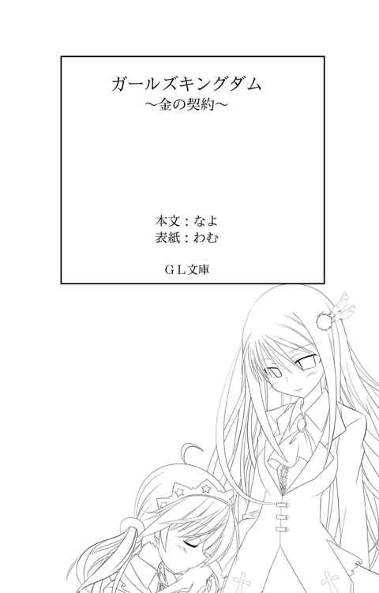
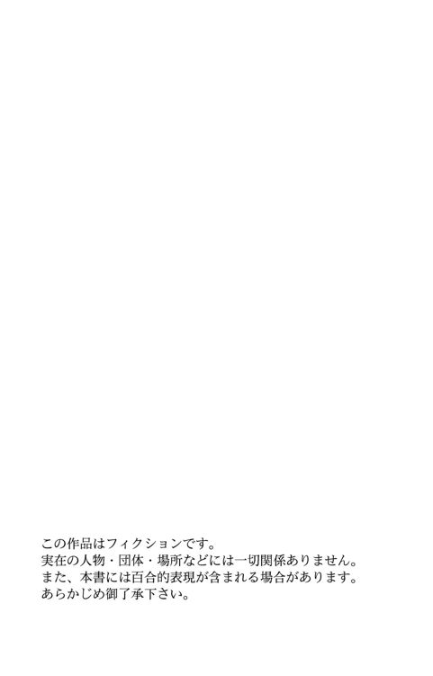
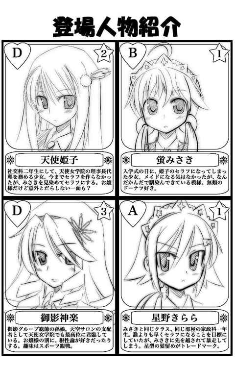
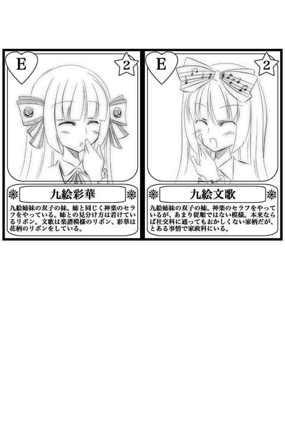
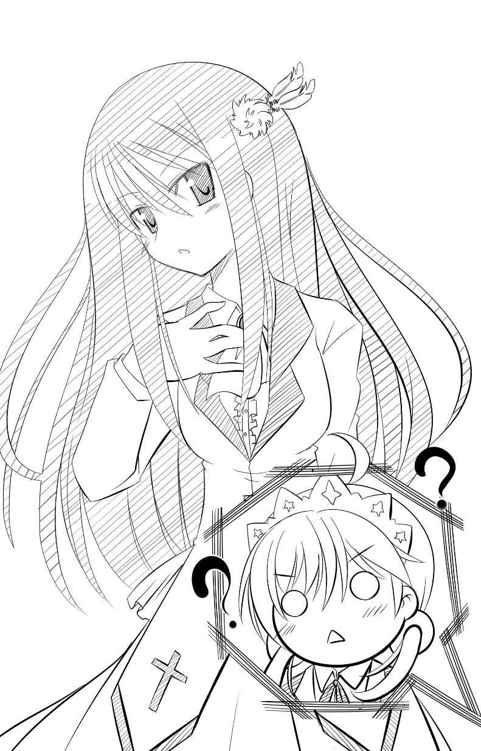
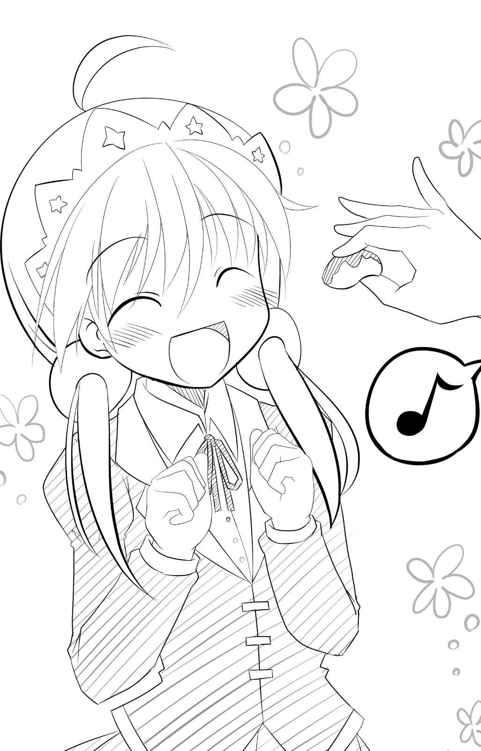
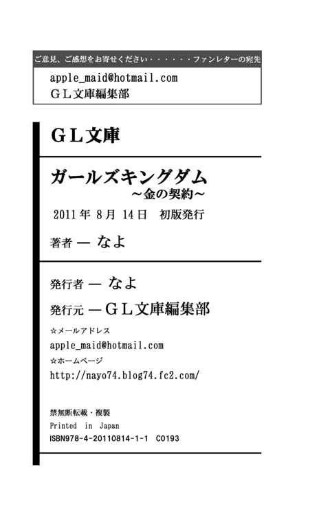
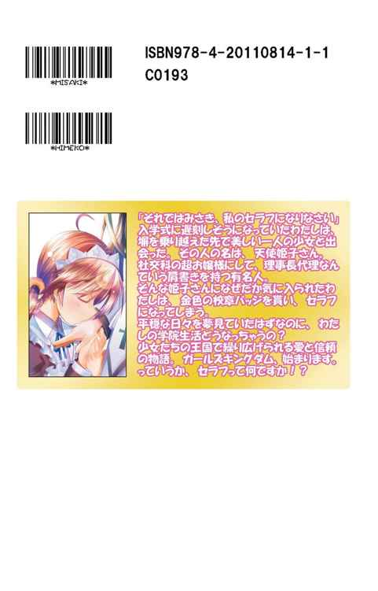

| ガールズキングダム: 金の契約 (GL文庫) | |
| なよ | |
| (2014) | |




桜の花びらがひらり、ひらりと舞って、わたしの視界を幾度となく流れ落ちていく。
降り注ぐ春の日差しが暖かく、ぽかぽか陽気で実に良い散歩日和。
こんな日はサンドイッチでも持って、お花見に行けばきっといいことがありそう。
舞い散る桜吹雪をその身に受けながら、うたた寝なんてできればさらに気持ちの良い一日が過ごせるに違いない。
......。
............。
............もっとも、今のわたしにはそんなことをする余裕は一切なく――。
「ああっもう、完全に遅刻じゃない」
桜の花びらが舞い散る歩道を、わたしは額に汗をにじませながら走っていた。
どうしてこんなことになってしまったのだろう。
余裕を持って出てきたはずなのに......。
確かに下見をしなかったのは間違いだったと思っている。
でもまさか、こんなにも遠いだなんて――。
ドーナツ型の髪留めで縛った二つのしっぽが、わたしを急かすようにして背中をピシャリと打ちつけた。
今日が新学期の初日――というか、入学式なんだけど、そんな大事な日に遅刻しそうになるなんて。
せっかくの真新しい制服がばっさばっさとひるがえり、はしたないことこの上ない。
しかし、そんなあられもない姿を見る者も、注意する者も誰もいない。
当然だ。周りには、わたし以外に人の姿はなく、もうそれだけで今の状況が絶望的なことがありありとわかってしまう。
歩道に敷かれた桜色の絨毯が乱れていないところを見ると、わたしがどれだけ遅れているかわかってしまうというものだ。
新雪につけられた足跡が降り積もった雪で消え去るがごとく、その場所をしばらく人が通っていないということを表していた。
時刻はすでに八時二十分を過ぎた頃だと思うけど、時計がないので正確な時間はわからない。
最後に時計を見たのは駅前のロータリーで、その時はまだ八時前だったと思う。
余裕だろうと散歩気分でいられたのは、あまり長い時間ではなかった。
惚れ惚れするような桜並木も、心躍る春の陽気な空気も、今のわたしにはまったく意味のないものだ。
わたしの向かう先――天使女学院は小高い丘の上にあって、駅前からでもそれほど遠くにあるようには見えなかった。
初めは鼻歌を歌いながら、どんな学院生活が待っているのかなと、楽しく想像しながら歩いていたのだけど、十分ほど歩いた頃にはちょっと冷や汗が流れ始め、さらに五分ほど経ったと思われる頃には頭の中で警報が鳴り響いていた。
このまま歩いていたら絶対に間に合わない！ と。
天使女学院は、見た目は西洋のお城の様でとにかく大きく、そしてあまりにも広大な敷地に学院の建物しかない為に遠近感が狂ってしまい、それほど離れていないと錯覚してしまったのだ。
遅れを取り戻すべく走り出したのはいいのだけど、学院へと続く道はゆるやかな上り坂になっていて、体力に自信があってもかなりきつい道のりだった。
それでも必死に走ってようやく平坦な道へ辿りつき、学院の傍まで来られたのは良かったのだけど、そこで新たな問題が発生した。
学院を取り巻くように、高さ二メートルほどのレンガの塀が延々と続いているのだ。
門らしきものは一切見当たらない。
当然だ。ここから見上げる校舎と思われる建物は、明らかに後ろ姿をわたしに見せていた。
正門はどう考えても逆にあり、そして正門まで行こうとすると、この果てしなく続く壁沿いをまたひた走らなければならない。
「この、反対側に回れと？ もうかなり限界なんですけど......」
わたしは膝に両手をつき、がっくりとうなだれた。
膝が笑い、太ももがピクピクと痙攣し始める。
ここから反対に行こうとするなら、ゆうに十分以上は走らないと辿りつけそうにない。
「待って、これだけ広いなら出入り口はいくつかあるはずよね」
膝から崩れ落ちそうになるのを我慢して、正門はここじゃなくても裏門くらいはあるだろうと体力を振り絞って探し始めたのだけど――。
「ない......どこにもない......」
いくら探しても見つからなかった時には、本当に膝から崩れ落ちた。
ただ単に離れた場所にあるだけなのかもしれないけれど、それを探す時間はもうなさそうだ。
嘆いていても状況は良くなるどころか悪くなる一方でしかない。
時間は止まってくれない。それならば、わたしのやるべきことは決まっている。
＊＊＊
「はぁっはぁっ......はぁっはぁっ！」
そして、わたしは正門を目指して走っているのだけど......。
「なんでこんなに広いの！ 門くらい沢山作っておいてくれてもいいんじゃないの!?」
思わず泣きごとを言わずにはいられなかった。
もしかしたら逆回りで行けばあったのかもしれないけれど、今更引き返すことなんてできない。
兎にも角にも諦めずに走り続けるしかない、きっとまだまだ大丈夫。そう希望的観測を持っていたのだけど、その考えは大甘だった。
全力で走った甲斐もあり、ようやく校舎の正面がちょろっと拝めるようになってきた時に時計塔が視界に入ってきたのだけど、その針が八時半近くを指していたのだ。正確には八時二十七分。
三十分までに学院の敷地内にいないといけないのに、どう考えてもあと三分で正門まで行ける距離ではない。そもそも正門なんて見えやしない。
このままでは入学式に遅刻確定だ。
夢の第一歩を踏み出そうとしているのに、自分から足を踏み外さなければならなくなってしまう。
入学式に遅刻してきた女としてブラックリストに入ろうものなら、いい大学へ――できれば推薦入学で入って一流企業へ就職するという夢が断たれてしまう。
ブラックリストは大げさだとしても、新生活の第一歩から失敗なんてしたくない。
......となれば、残された方法はただ一つ。
わたしは足を止めて大きく息を吸い込み、呼吸を整えた。
もちろん諦めたわけではない。
その場でくるりと左を向くと、塀に向かい合った。
「もうこれしかないよね......」
できればこんなことはしたくなかった。
しかし、最早手段を選んでいる余裕はないのだ。
わたしは脇に抱えていた学院のロゴ入りバッグを、おもむろに学院の敷地内めがけて放り投げた。
普通に走ったら間に合わない。しかし、この塀を乗り越えたら？
そう、そこは当然学院の敷地内。校舎のすぐそばというわけだ。
どうか誰にも見られませんように。
心の中で祈りながら屈伸をして準備を整える。
相変わらず周りには誰もいないので、私のやろうとしている行為を咎める者はいない。
ならば今が好機！
わたしは全力で駈け出すと、塀の中腹を蹴り上げ、その反動を利用して塀の最上部へと両手をかけた。そして勢いをそのままに、両手に力を込め、一気に体を塀の上へと持ち上げる。
......そう言うと格好良く、くのいちの様な動きをしたかに思われるかもしれないけど、実際はかなり必死に塀にへばりつきながら、なんとかよじ登ったというのが正解だろう。
とはいえ、どれだけ不格好であろうとも、一回で成功できたのは大きい。わたしの体力はもう限界に近かったのだから。
なにはともかく、これで敷地内へ潜入することができる。
反対側へ降りる時は飛び降りるなんてことはできないので、塀にぶら下がりながらえっちらおっちらとなんとか降りることに成功した。
着地だけは両手を広げて体操選手のようにしてみる。
うん、華麗な着地だ。
さて、後は何食わぬ顔で入学式に出席出来ればいいのだけど......。
制服についた埃を払い落し、さあバッグを拾って行きましょうかと振り向いたその時、わたしは一人の少女と目が合ってしまった。
――一瞬時間が止まった。
なんて綺麗な人。
息をのむような美少女がそこにいたのだ。
「あら、可愛らしい泥棒が入ってきたものね」
少女も驚いた表情をしていたけど、すぐに平常心を取り戻したようで、わたしよりも早く口を開いた。
その言葉でわたしの時間が動き出す。
「っ！」
ひええええっと叫びたくなるのを必死に抑えて、大きく目を見開いた。
しまった。外に誰もいなかったものだから、完全に油断していた。
まさかちょうど乗り越えたすぐその先に誰かがいたなんて。
それだったらバッグを放り投げた時になんらかのリアクションをして欲しかった。
「貴女新入生？ すごいところから入ってきたのね」
その少女はどうやら上級生のような感じだった。雰囲気からして、わたしのようないかにも制服を初めて着ました、といった感じとはまったく違う。
腰まで真っ直ぐに伸びた髪はほんの少し紫がかっていて、神秘的な雰囲気を醸し出している。長い髪がさらりさらりと微かな風に揺れて、光を反射してキラキラと輝いていた。
左耳の上あたりには、ふわふわの毛玉に白羽が二本ついた髪飾り。
染み一つない真っ白な制服を隙なく着こなし、いかにも気品のある佇まいをしている。
確かめるまでもなく、いいところのお嬢様なのだろう。
わたしのことを見つめるブルーサファイアのような瞳は、わたしを非難するようなものではなく、面白い物を見つけたと言わんばかりに興味深げに美しく輝いている。
胸元のリボンにはその瞳と同じくらい綺麗な赤い宝石のようなものが埋め込まれており、誇らしげに胸元を飾っていた。
これが上級生の醸し出す気品なのだろうか。それともこの人だけが特別で、やはり育ちからして違うのか。
いや、それよりもなぜかわたしと制服の色が違うのが気になる。
わたしの着ている制服は襟と袖口以外は黒なのに対して、その人の制服はわたしと真逆の白を基調にしている。リボンもわたしが紐タイ、あちらはどこの貴族ですかといいたくなるようなフリフリのリボンになっていた。
もしかして学校を間違えた？ なんて思ってしまう。
「あの、ここ天使女学院で合ってますよね？」
「ええ、合っているわよ、泥棒さん」
不安になって確認してみたけど、やはり間違ってはいないようだ。
そんなわたしの様子を見ながら、白い制服の人は口元に軽く右手を添えてクスリと微笑む。
少女の微笑みに、つい見惚れてしまう。
いやいや、今はそんな場合ではない。
「ええと、何か勘違いされているようなので一つ言わせていただきたいのですが」
さすがに泥棒扱いされるわけにはいかない。ちゃんと訂正しておかねば。
「あら、何かしら」
「わたしは泥棒じゃないです。遅刻しそうだったから仕方なく塀を乗り越えただけですから」
「あら、そうなの？ でも随分と変なところから現れたのね。わざわざこんなところまでお散歩してきたの？」
「はい？」
「だって、バスでここまで来たのではないの？ だとするとわざわざ反対側まで歩いてきたとしか思えないし」
うん、まあ普通はそう思うよね。
「いえ、バスに乗るお金がなかったので走ってきたんです」
「走って!?」
そう言うと、白い制服の人は酷く驚いていた。
わたしの現在のお財布の中身は、とてもじゃないけど公表できるようなものではない。
とある事情でスッカラカンなのだ。その場でジャンプしてみなさいと言われても、チャリンともしないくらいだ。
「もう少し近いと思ったんですけどねぇ」
やっぱり下見はしておくべきだった。しかし、それすらもできないお財布事情と、その他モロモロがあったのだ。ちなみに入学試験は地方受験というやつで、実際にここへ来るのは今日が初めてだった。
「なんだか大変そうなことはわかったけれど、駅からのバスだったら生徒なら無料で乗れるわよ」
「ええっ？ そうなんですか？」
そういえば、わたしと同じ制服の子たちがバスを待っているところは見たけれど、確かに一般の人は誰も並んでいなかったような......。
しまった、もっとよく見ておけばよかった。
「まあ、どんな理由があろうとも、塀を乗り越えるような真似は感心できないわね」
わかってます、そんなこと百も承知です。
「でも、そうしないと間に合わないと思って――、ってもう時間がないので行ってもいいでしょうか」
こんなところで立ち話をしている場合ではない。こうしている間にも、時間は刻一刻と流れているのだ。
「行ってもいいけれど、もう時間切れね」
白い制服の人は、袖を少しまくり上げて腕時計に視線を落とした。
もしかして、もう三十分になってしまったの？
「そ......」
そんな、と言おうと口を開いた時、時間切れを告げる盛大な鐘の音が鳴り響いた。
カラン、カラン！ カラン、カラン！ と。
機械の音なんかではなく、本物の鐘の音。時計台に備え付けられた黄金色の鐘が激しく揺れている。
本物の鐘の音はとても力強く、それでいて耳に心地いい。
しかし、それは今の私にとっては一番聞きたくないものでしかなかった。
「残念ね。入学式に出ることも出来ずに退学になるなんて。私の記憶では貴女が初めてかもね」
「はいぃ？ いま退学って言いました？」
「ええ、言ったわ。だって入学式に遅刻するような生徒は、入学する意思無しと取られても仕方ないでしょう？」
「そんなっ、少し遅刻したくらいで退学なんてやりすぎじゃないですか？ せいぜいキツいお説教をされて、しばらくの間先生方に目をつけられるくらいじゃ......」
「普通の学校ならそうかもしれないけれど、ここは普通ではないもの。それに貴女は家政科の生徒でしょう？ それくらいわかっているはずじゃないのかしら」
「全っ然わかりません。どうして家政科だとわかっていなければいけないんですか」
理不尽だ。あまりにも理不尽だ。
そりゃあ遅刻したわたしが悪いけど、でもそれが退学になるようなことなの？
「どうしてって、本当にわからないの？ 貴女ここへ何をしに来たのかしら」
「何って、勉強ですけど」
学生なのだから、それ以外になにがあるというのか。
「勉強？ 普通の？」
「あたりまえです。わたしはここで一生懸命勉強して、頑張っていい大学へ行くんですから」
「ふーん」
わたしが抗議をすると、白い制服の人は首をかしげて珍獣でも見るような眼をしていた。
「貴女、本当にここがどんなところかわかっていないのね。珍しいわ。貴女みたいな子がいるなんて思ってもみなかったわ」
「どういう意味ですか？ それは」
「だってここは......」
白い制服の人は一旦口を閉じると、少しだけ背後に視線を向ける。
つられて見ると、そこには先生らしき人が慌てた様子でこちらに走って来るのが確認できた。
もしかしてわたしを探しに来たのだろうか。
「ねえ、貴女。よかったら私が助けてあげましょうか」
「え？」
「いま走って来ている先生は教育指導の先生よ。塀の上にはね、ちゃんと防犯用のセンサーがあるのよ。先生はそれの報せを受けてやってきたのだわ。そこで貴女が捕まれば遅刻なんて関係なしに退学ね。塀を乗り越えるような真似をする生徒を入学させるわけがないもの」
「ええっ？」
しまった。今の時代それくらいの防犯装置が有ってもおかしくはない。こんなお城みたいなところならなおさらだ。
「だから取引をしましょう。貴女が私を満足させる答えを出せたなら、私が助けてあげるわ」
「はっ？」
答えって言われても何がなんだか......。
「時間がないので、速やかに聞くわね。......まずはそうね、貴女がこの学院に来たのは普通の勉強をするためなのよね？」
「はい、そうですけど」
よくわからないけど、もうこの人に頼るしかないのだろうか。
「メイドになる為ではないのね？」
「はいぃ？」
メイド？ なぜ学生のわたしがメイドに？
というかいきなり斜め上すぎる質問なんですけど。
わたしが頭上にクエスチョンマークを出していると念を押すようにもう一度聞いてきた。
「貴女は家政科を受験してここにいる、でもそれはメイドになる為ではないのね？」
「はあ、よく意味がわかりませんけど、メイドになるつもりなんてないですけど」
「そう」
わたしの答えに白い制服の人は満足そうに頷いていた。
「貴女、当然私のことも知らないのよね？」
「え？ そりゃあ、たったいま会ったばかりですから」
もしかして有名な人だったのだろうか。
「芸能人とかなんですか？」
確かにこれだけの美人さんならありえない話ではない。
しかし、あいにくとそういったものに疎いので、名前を言われても多分わからないのだけど。
「そんなわけないでしょう。ふふ、いいわ、貴女のこと助けてあげる」
どうやら、たったあれだけのことで良かったらしい。
メイドになるとかならないとか、自分のことを知っているかとか、さっぱりわからないけど、結果オーライみたいだ。
「貴女、名前はなんて言うの？」
「......蛍みさきです」
「そう、いい名前ね。それではみさき、私のセラフになりなさい」
白い制服の人は、胸に手を当ててにっこりと微笑んだ。

「はい？」
セラフってなんですかー？
そんないい笑顔をされても、わたしにはさっぱりなんのことだかわからない。誰かわたしに解説してくれないものだろうか。
「時間がないから、そのあたりのことはクラスメイトにでも聞きなさい。みさき以外の子なら大抵知っているのではないかしら」
「はあ......？」
わたし、もしかして変なところに来てしまったのだろうか。
「とりあえず、これをつけなさい」
そう言って差し出されたのは金色の校章バッジだった。中央に王冠があって、それを囲むようにして羽が描かれたものだ。
「これが私とみさきを繋げるセラフの証よ」
セラフの証......ねぇ。
普通の校章バッジは銅色の極々一般的な物。それに比べれば、この金色の校章バッジは何やら特別な感じがする。
「あの、ところでお名前を聞いていいでしょうか」
助けてもらうのに、いつまでも白い制服の人では失礼だ。
尋ねながら、襟の校章バッジを付け替えた。
「私の名前は......」
「天使さん」
白い制服の人が名乗ろうとした時、走って来ていた先生が息を切らしながらとうとうやってきた。
緊張が走る。
ここを乗り越えられなければ、わたしはスタートラインにすら立てなくなってしまう。
それにしても、いま先生は「あまのつかさん」と言っていた。
あまのつか？ それはこの学院と同じ呼び方のような気がするけど――。
私の疑問に答えるように、天使さんはわたしの耳元で囁いた。
「私の名前は天使姫子よ。みさきは下の名前で呼びなさい。あとは私に話を合わせればいいわ。わかったわね」
天使姫子――姫子さんと呼べばいいのかな。
「わかりました、姫子さん」
「それでいいわ」
わたしが名前を呼ぶと、姫子さんはニッコリと微笑みながら振り返った。
「おはようございます、峰岸先生」
「はい、おはようございます」
落ち着き払った声で、姫子さんは柔らかな物腰で先生に頭を下げる。
ほんの少し腰をかがめて、スカートを両手で軽く持ち上げる様はとても優雅だ。
先生は姫子さんを見て、そしてわたしにも一瞬視線を向けた後、再び姫子さんに向き直った。
「天使さん、このあたりで何者かが塀を乗り越えたようなのですが......」
先生はもう一度わたしに視線を向ける。
冷や汗が流れる。
極力、挙動不審にならないようにしなければ。
「ああ、申し訳ありません。それはこちらのみさきのことですね」
姫子さんがわたしの腰に手を当てて少し引き寄せた。
わたしは軽く頭を下げながら、そのまま身を任せて姫子さんに寄り添う。
「みさきさん？」
紹介されたことで、先生は遠慮なくわたしのことをジロジロと見てきた。
「貴女は新入生ですね？ 新入生ならもう講堂に集まっていなければいけないはずですが......あら？ その校章バッジをつけているということは......」
先生はわたしの襟につけられた校章バッジに気が付き、目を大きく開いた。
やっぱりこれは、かなり特別な物なのだろうか。
「はい、この子は私のセラフです。入学式の日に契約を交わしたくてここで待ち合わせをしていたのですが、塀の上に子猫が登ったまま動けなくなっていたのを見つけて、みさきに助けてもらったのです。その時にセンサーに引っかかってしまったのですね」
「まあそうなのですか」
かなり嘘っぽい話だと思うのだけど、先生は素直に信じてしまったようだ。
「忙しいときにお騒がせして申し訳ありませんでした」
深々と頭を下げる姫子さんに合わせて、わたしも頭を下げた。
「いいのですよ、原因がわかれば」
「ありがとうございます」
「それにしても、天使さんがセラフを作らなかったのはみさきさんを待っていたからなのですね」
「はい。本当ならば周りにも説明しておけばよかったのですが、契約もしていないうちから言うのもどうかと思いまして」
「そうですね。周りの子たちは随分とヤキモキしていたみたいですが、思慮深い判断だと思いますよ」
「ありがとうございます」
再び姫子さんは頭を下げた。その時にわたしの手を優しく握ってきたのだけど。それは「よかったわね」と言っているみたいだった。
一応これで一安心なのかな。
「それでは二人とも早く講堂へ集まってください。もう間もなく入学式が始まってしまいますよ」
「はい、わかりました。......ああ、そうですわ。先生、実はみさきが私のところへ少しでも早く来るために急いでいたのか、受付けをするのを忘れてしまったみたいなのですが」
ああ、そういえばその問題もあった。
いくらなんでも、さすがに受付もしていないなんて怪しすぎると思うのだけど、そこはセラフとやらのパワーなのだろうか。
「仕方ありませんね。受付の先生方には私から言っておきますので、二人は急いでください」
あっさりと切り抜けてしまった。
セラフって一体......。そして姫子さんって何者？
「申し訳ありませんが、よろしくお願いします。それではみさき、行きましょう」
姫子さんがわたしの手を取って歩き出す。
......。
............。
「あの、ありがとうございます。おかげで助かりました」
先生にもう声が届かないところまで来ると、わたしは姫子さんの背中を見ながらお礼を言った。
「いいのよ、みさきは私のセラフなのだから」
姫子さんはなぜだか上機嫌でぐいぐいとわたしのことを引っ張っていく。
「そのセラフって何なんですか？」
やっぱり気になる。
「それは、今は秘密。みさきが後から何なのか知った時の反応が面白そうだもの」
「意地悪ですね」
「あら、助けてあげたのに心外だわ」
「はあ......」
助けてもらった以上言うことを聞くしかないのだけど、おかしなことに巻き込まれていないか不安になってしまう。
＊＊＊
「さあ着いたわ」
結局、何も教えてもらえないまま講堂へと着いてしまった。
そこはわたしが校舎だと思っていたお城のような建物だったのだけど、どうやら一般の校舎ではなく講堂や特別教室の集まる建物だったらしい。
結果的に入学式の会場へは近かったのだけど、普通の教室は別のところにあるようで、そこも当然のごとくお城のような建物だった。
お城が二つそびえ立つ学院......。
思わずため息が出てしまう。
「みんな集まっているみたいだけど、式はまだのようね」
講堂の後ろの扉を開けて、姫子さんは中を確認していた。
「ああ、そうだわ。明日の放課後にこの建物の上階にあるエレベータホールに来なさい」
「エレベータ？ そんなものがあるんですか？」
「ええ、エレベータを上がったところに、ちょっとしたお茶会が出来るような場所があるのよ。そこに私たちは良く集まっているから、みんなに紹介するわ」
「わかり......ました」
「あら、不満そう？」
「そりゃ、わけのわからないことばかりですから。姫子さんは楽しそうでいいですけど」
少しの嫌みを込めてみたけど、姫子さんには通じない。楽しそうにクスりと微笑むだけだった。
「とても楽しいわよ。それにこんなにも胸躍るのは久しぶりのことだもの」
「さっぱりわかりません」
「いいのよ、みさきはまだわからなくて。学院に慣れてくれば色々わかってくるわ。それまではそのわからない状況を楽しんでみたらどうかしら」
「できるだけそうなるようにしてみます......」
「ふふ、今日はいい日だわ。みさきみたいな子に出会えるなんてね」
「はあ......」
姫子さんは鼻歌でも歌いそうな勢いで扉を開けて、臆することなく入っていく。遅刻していることなんてまったく気にしていないみたいだ。
わたしもその後に続いたのだけど、足を一歩踏み入れた瞬間、不満に思っていたことも忘れて「わぁ」っと、感嘆の声が出てしまった。
講堂は体育館のようなものをイメージしていたのだけど、どちらかといえば教会かコンサートホールのようになっていて、ずらりと椅子が並べられていた。それも安っぽいパイプ椅子じゃなく、ちゃんとクッションがふんだんに使われた高そうなものだ。
正面には大型のパイプオルガンが設置されていて、その華やかさと荘厳さに圧倒されてしまう。
パイプオルガンの前には姫子さんと同じ白い制服を着た少女が二人。一人はパイプオルガン、もう一人はヴァイオリンを弾き、どこかで聞いたことのある曲を優雅に演奏していた。
この曲はビバルディの四季だったかな。その中の春だったと思う。陽気な曲で、心が高揚してくるのがわかる。これから頑張ろう！ って気分になる曲だ。
「呆けてないでこちらへ来なさい。まずはみさきのクラスを確認しないといけないのだから」
「あ、はい」
先導する姫子さんの後をついて行きながら、講堂の中を観察する。
入学式なのだから、ここにいる生徒は皆わたしと同じ新入生のはず。
だけど、椅子に座っている子たちを見て、「あれ？」と思った。
なんだか左と右で、綺麗に二色に分かれている。
わたしと同じ黒い制服を着たグループと、姫子さんと同じ白い制服のグループ。
色の数的には黒い方が多そうだ。
「姫子さん、この学院って制服が二種類あるんですか？」
「二種類って......ああ、そういうこともまったく知らないのね」
先を行く姫子さんの背中に声をかけると、姫子さんは一度立ち止まって振り向いた。
「社交科の生徒が白い制服で、家政科の生徒が黒い制服なのよ」
「へえ、家政科以外に学科があったんですね。受験した時に社交科なんて見たことなかったですけど」
「社交科は基本的に中等部からの持ちあがりだけで、外部からの募集は一部の例外を除いてしていないわ」
「ということは、姫子さんは社交科の生徒で、中等部からこの学院にいるってことなんですね」
「ええ、そうよ」
それだけ答えると、また前を向いて歩いていってしまう。
詳しい説明をする気はまったくないようだ。
「ええと、どの先生に聞けばわかるかしら。少し待っていてちょうだい」
「はい」
ちょうど黒い制服のグループの真後ろに来たあたりで、姫子さんはわたしがどのクラスなのか確認する為に、一人で先生たちのところへ行ってしまった。
一人になるとちょっと気まずい。
何せわたし以外の生徒は皆席につき、お行儀よく式が始まるのを待っているのだ。
手持ち無沙汰になり、意味もなく足をもぞもぞと動かしたりしていると、ふいに一人の生徒と目が合ってしまった。
わたしが席にも着かず、立ったままでいるのが気になったのだろう。
その人は、「何をやっているのかしら」という視線を投げかけてきていた。
目が合ってしまった手前無視するわけにもいかず、軽く会釈をしたのだけど、突然その人の表情が『不審』から『驚愕』に変化した。
それはもう見ているこっちがびっくりするくらいに大きく目を見開いて、わたしのことを凝視してきたのだ。
えええ？ わたしに何か変な所でもあっただろうか。
制服に乱れはないし、ちゃんと塀を乗り越えた時についた汚れも払い落してある。破れているところがあったり......も当然していない。
そんな驚いた表情で見つめられる要素なんて――と考えたところで、一つ思い当たる節があった。
それを裏付けるかのように、よく見ればその人の視線はわたしの体のある一か所に集中している。見られている場所に穴でも空くんじゃないかっていうくらいの強い視線だ。
どう考えても金色の校章バッジを見ているよね......。
やっぱりこれ、ただの校章バッジじゃない？
ああ、面倒なことになりそうだから、隠してしまいたいなぁ。
なるべく見えない様にちょっと体の角度を変えたのだけど、時すでに遅し。
「セラフ......？」
その人が呟いた一言が、水面を打って波紋を作るがごとく、サアァっと周りに広がっていってしまったのだ。
次々と「セラフ？」とか「えっ」とか口にしながら生徒たちがこちらを振り返る。
「ひえぇっ」
これは非常にまずい気がする。
ざわめきは次第に大きくなり、それまで静かなヴァイオリンとパイプオルガンの調べしか聞こえなかった空間が、雑然としたものになってしまった。
こちらを見ながら周りと小声で何やら話している生徒。好奇と羨望、そして嫉妬の入り混じった視線。
奇妙なことにそれらは黒い制服の少女たち、すなわち家政科の生徒たちのみが反応しているのであった。
白い制服の少女たち――社交科の生徒たちは、好奇の視線を向ける者はいたけれど、家政科の生徒たちのようにざわめいたりする者はいない。
つまり、これは家政科の生徒たちのみに特別な物ということなのだろうか。
顔をひきつらせていると、
「あら、騒がしくなっているわね。何かあったのかしら」
何食わぬ顔で姫子さんが戻ってきた。
あなたのせいです。全部姫子さんのせいなんですから。
抗議しようと口を開きかけた時、それまでのざわめきなんて比べ物にならないくらいの騒ぎが起こった。
「姫子様よ」「姫子様だわ」「きゃーーー」
といった黄色い悲鳴が上がり始めたのだ。
「もしかして私のせいだったかしら」
何このアイドル扱い。新入生が知っているくらいの有名人ってどんだけなんですか。
「もしかしなくてもその通りですよ。なんだかみんなこの校章バッジを見て騒いでいるみたいですし、どうするんですかっ」
「困ったわね」
言葉とは裏腹に、姫子さんは楽しそうだ。
「まずはみさき、貴女は席に着きなさい。二組の......席が一つ空いているからそこね」
「はい......って場所がわかれば後は一人で行けますけど」
姫子さんに肩を押されて連れて行かれるのだけど、視線が、みんなの視線が痛いくらいに突き刺さる。
姫子さんの名前を呼ぶ黄色い悲鳴は収まることを知らず、さらにそれに加えてわたしに対する嫉妬の声が混ざり始めたのだ。
「何よあの子」「姫子様の何なの」「きーーーっ」
うわー......、これってわたしが虐められるフラグだったりしないよね。
遅刻したばかりに、わたしの運命真っ逆さまってやつだったりするのだろうか。
「はい、ここがみさきの席ね」
姫子さんはこういったことに慣れているのかあまり動じた様子がない。
わたしを席に座らせると、くるりと振り返り手を二回叩いた。
「皆さん静かにしてください。まもなく式が始まりますよ」
たったそれだけのことで、それまで騒がしかった生徒たちが皆シーンと静まり返ってしまったのだ。
すごい。
騒ぎたい盛りの女の子たちが、先生でもないただの生徒の言うことをすんなり聞くなんて。
姫子さんて何者？
「それではみさき、またね」
周りに愛嬌を振りまいた姫子さんは、最後に小悪魔のような笑みをわたしだけに見せて、壇上の方へと歩いていってしまった。
......壇上？
姫子さんは、そのまま壇上の両脇に並べられた豪華な椅子の一つに、澄ました顔で座ってしまったのだ。
あれって来賓の人とか、祝辞を述べたりする人が座る席じゃないのかな。
姫子さんてばおっちょこちょいさん、と突っ込みを入れたいところだけど、わたしは閃いた。
わかった、姫子さんは生徒会長なんだ。
生徒会長だったら、学校案内のパンフレットに載っていて、それで新入生が知っていても不思議じゃない。壇上に上がったのだって、生徒会長の挨拶をする為なのだろう。
それなら、さっきの統率力も理解できる。
セラフというのは生徒会の隠語か何かで、金色の校章バッジは生徒会のメンバーの証なんだ。
メイドがどうのこうの聞いてきたのはよくわからないけど、わたしが暇なのか聞いていたのだとすれば、生徒会のメンバーにしても大丈夫よね、ということなのだろう。
うんうん、色々納得だ。
でもいきなりそんなものにするなんて、と姫子さんを睨みつけると、視線に気がついた姫子さんが手をひらひらと振ってきた。
「あなた姫子様のお知り合い？」
「はい？」
ぐぬぬと眉間に皺を寄せていると、ふいに隣の席の子が話しかけてきた。
星型の髪飾りを使って後ろ髪を縛った、少し目つきのキツい子だ。前髪のひと房をまとめる髪留めにも星のマークが入っている。お気に入りのアイテムなのかな。
その口調は丁寧だけど、少し棘のようなものが含まれているような気がする。
わたしに対して嫉妬や不信感のようなものを抱いているのだけど、極力表に出さない様にしているような感じ。
もし変なことを言って本当に姫子さんの知り合いだったらマズいと思っているのだろう。
「ええと、知り合いというほどのものでは......」
「本当に？ でもその校章バッジはどうしたの？ 姫子様に貰ったのではないの？ 入学式の前にセラフになるなんて、ずっと前から約束をしていたのかしら？ それにあなた一人だけ遅れてきたのにお咎めもないなんて......。それってやっぱり姫子様の口添えがあったからなのよね？ どういうことなの？ 知り合いでもないのに姫子様にそこまで良くしてもらえるなんて、あなた一体何者なの？」
「う......」
わたしが姫子さんと親しくないとわかると、その子は取り調べのような厳しい口調で、一気にまくしたててきた。
姫子さんがどうしてわたしに良くしてくれるかって？ そんなことわたしのほうが知りたいくらいだ。
わからないものは答えようがない。適当にごまかしてしまおうか。
でも、隣に座っているということは同じクラスになるってことだしなぁ。下手なことを言って、後からバレたら余計に困ったことになりそうだ。
誰か助けてくれないかなと、ちょっと周りに視線を向けてみたものの、それはあきらかに期待できそうにない。
助けどころか、皆真面目に正面を向いているように見えて、耳だけは必死にこちらの声を拾おうとしているのがありありとわかった。
興味があるのは皆同じというわけだ。
「ええと、一から話すと長くなりそうだから、後からじゃダメかな。ほら、式ももうすぐ始まるし、私語をしていたら怒られる......よね？」
必殺先延ばし。......別に殺さないけど。
当の本人でさえまったく事の成り行きがわかってないのに、説明なんて出来るはずがない。
ここは少し時間を置くのが正解だろう。
この子もちょっと興奮状態で、ありのままを言ったとしても信じてくれるかわからないし......。
遅刻しそうになって塀を乗り越えたらそこに姫子さんがいて、メイドにならないと宣言したら金色の校章バッジを貰いました。
......うん、意味不明だ。
もうちょっと話を整理して、せめてセラフがなんなのかを理解してからじゃないと説明のしようもない。
本当に生徒会のメンバーに選ばれたのだとしたら、役職がなんなのか確かめないといけないし。
というか、勝手にそんなものにされても困るし、断れるものなら断りたいところだ。
「......わかったわ。でも後で色々聞かせてもらうからね。本当は私が......いいえ、なんでもないわ」
一応納得してくれたのか、それ以上の追及はされなかったけど、聞きたくてしょうがないというのが痛いほど伝わってくる。
その代わりというわけでもないのだろうけど、
「あなたの名前、聞いてもいいかしら」
その子は前を向いたまま、わたしにだけ聞こえるような声で尋ねてきた。
名前だったらいくらでも教えることができる。
「わたしは、蛍みさき。今日からこの学院でお世話になることになりました」
「ここにいるんだから当たり前でしょう。っていうか、やっぱりあなたがみさきさんなのね。はぁっ......」
わたしが名前を言うと、なぜだかため息をつかれてしまった。
その口調はわたしのことを知っているようでもある。
「もしかしてわたしって有名人ですか？」
「......ええ、有名人よ、一部ではね。何しろ入寮手続きをしていないのはあなただけなんだから」
「入寮って......、ああ、ここ全寮制ですもんね。あれ？ でも入学前から入寮できるんですか？」
「出来るに決まっているでしょう。案内書に書いてなかった？ 実際に入寮するのが今日からだとしても、早い人は二週間くらい前から、遅くても昨日のうちには手続きしているわよ、あなた以外はね。いくら待っても来ないものだから、てっきり入学を取りやめたのかと思っていたわ」
「あー、色々事情がありまして、今日まで来ることができなかったんですよ」
しまった、そんな前から来てよかったんだ。それを知っていたら余計な出費をすることも遅刻することもなかったのに。
「でも、よくわたしの......」
「どうしてあなたの名前まで知っていたかというと、私とみさきさんがルームメイトだからよ」
「......なるほど」
ルームメイトということは......。
「だから、誤魔化そうとしても無駄よ。いくらでも話を聞く時間はあるのだから」
全部お見通しですか......。
「ははっ......」
乾いた笑みが出た。
まあ話すのが嫌なわけじゃなくて、状況がわからないから話し様がないというだけなので、もろもろの整理ができれば問題はない。
そうか、この子と一年間は同じ部屋で過ごすことになるんだ。
「あの、これからよろしくね。ところで寮って二人部屋なの？」
「四人部屋よ」
「そっか、後二人いるんだ」
二人きりだとプレッシャーが凄そうだから助かるかも。
「ところで、わたしも名前を聞いていいかな」
「嫌」
「えっ？」
「冗談よ」
かなり本気で言われた気がする。なんか、目の敵にされてるなぁ。
「星野きらら、よ」
「星野さん......きららちゃん、って呼んでもいいかな」
名前を呼び合うことで、少しはお近づきになれるはず......なんだけど。
「嫌っ」
「うう......」
「冗談よ、好きにしたらいいわ」
「はあ......」
姫子さんと仲良くしていたように見えたのが、そんなにもダメなことだったのだろうか。
きっと、きららちゃんだけじゃなくて、他の子たちも似たようなことを思っているんだろうなぁ。
早く知り合いでも、仲良しでもないっていうことを言っておかないと、大変なことになりそう。
ひっそりとため息をつくと、ようやく式の始まる時間になったのか、春の調べが静かに鳴りやんだ。
軽く頭を下げる演奏者二名を拍手で見送り、少し背筋を伸ばした。
順風満帆な始まりとは言えないかもしれないけれど、スタートラインには立てたのだから良しとしておこう。
すべてはこれからの頑張り次第だよね、うん。
＊＊＊
入学式なんてものは、どこの学校でもそんなに違いがあるものではない。
ちょっと普通じゃなさそうなこの天使女学院でも、開式の辞から始まって、国歌斉唱、学院長告辞、来賓祝辞とごくごく普通のプログラムが続いていく。
厳かな雰囲気の中、新しい生活の第一歩を踏み出したことを実感して、胸が高鳴っていくのがわかる。
さっきまでキツい目をしていたきららちゃんも、いつの間にか名前のように目がきらきらと輝いていた。
そして、プログラムは在校生代表の挨拶へと進んでいく。
ようやく姫子さんの出番かなと思っていたのだけど、姫子さんの名前が呼ばれることもなく、椅子に座ったままだ。
「あれ？」
在校生代表の挨拶と言えば当然生徒会長――すなわち姫子さんが出てくるものとばかり思っていたのだけど、違うのかな。
首をかしげていると、姫子さんの反対側に座っていた生徒が立ち上がって中央に歩み出てきた。
「新入生の皆さん、ご入学おめでとうございます。在校生を代表して、生徒会長である私、安樹璃花がご挨拶をさせて頂きます」
生徒会長は生徒会長なんだけど、やっぱり姫子さんではないらしい。
しかしながら、この生徒会長さんも人気と知名度があるらしく、「アンジェリカ様～」なんて小さく声援が飛び始めたのだ。
ちなみに声援を送るのはやっぱり黒い制服の家政科の生徒たちだけだ。
社交科の生徒の皆さんは騒ぐ様子もない。
生徒会長も白い制服であることから、社交科の生徒だということはわかるのだけど、どうやら家政科の生徒たちにとって、社交科の生徒は特別な存在なのかもしれない。
まあ、このわずかな時間だけ見ていても、社交科はどこか品のある生徒が多い気がする。
こうなんていうか、オーラが出ているというか、社交科の生徒たちがいるあたりが白く光って見える、そんな感じだ。
それにしても、アンジェリカって......。今「やすきりか」って言ってたじゃないか。
「ねえねえ、どうしてアンジェリカって呼ばれているの？」
「璃花様のお名前を漢字で書くと、安樹璃花。あて字のようにして読むとアンジェリカと読めるでしょう？」
我慢できずにきららちゃんに聞くと、空中に指で文字を描くようにして教えてくれた。
「なるほど、なるほど。外国の方というわけじゃないのかな」
「そういう噂もあるけれど、確認したわけじゃないからそこまではわからないわね。日本人離れしている容姿だとは思うけど」
「あー確かに。ふわふわな銀髪だし、鼻も高いし、ちょっと美形すぎるよね」
姫子さんといい勝負をしてそうだ。
人気が出るのもよくわかるけど――。
「ねえ、それにしたってみんなよく在校生のことを知っているよね。普通入学前から知っているなんてことないでしょ？」
生徒会長の言葉に耳を傾けながら、小声できららちゃんに尋ね続ける。
「なぜって、それくらいの下調べをするのは当然でしょう」
「当然なんだ......」
「あなたって不思議よね。姫子様と一緒に来たわりには姫子様のことをよく知らないというし、寮へも現れない。なんだかこの学院のことを何も知らないみたいだし、一体なんの為にここへきたのかしら」
ああ、その言葉は姫子さんにも言われた気がする。
「もしかして、ここって普通の学校じゃなかったりする？」
恐る恐る言うと、きららちゃんは信じられないものでも見たという表情になった。
「やっぱり何も知らないのね。......そんな人に先を越されるなんて屈辱だわ」
今確実にわたしときららちゃんの間に壁が出来た気がする。少し仲良くなれた気がするのに一歩後退してしまった感じ。
「ええと......」
「何も言わなくていいわよ。後でちゃんと教えてくれるのでしょう？」
きららちゃんはため息をつきながら、ツンと鼻をそらした。
「う、うん......。ちゃんと話すから、わたしにも色々教えてもらっていいかな」
なんだか何も知らないままこの学院で過ごすのは、非常にマズイ気がしてきた。
「......いいわよ。姫子様と繋がりがあるのなら、仲良くしておいて損はなさそうだもの」
打算的な瞳で、きららちゃんは口の端をゆがめて微笑んだ。
プログラムは生徒会長の挨拶から、新入生代表による宣誓に移っていた。
それを務めるのは社交科の生徒だ。
一挙手一投足に華があり、見ているだけで惚れ惚れとしてくる。
あの人のこともみんな知っていたりするのだろうか。
「そんなの当たり前でしょう」なんてまた呆れ顔をされたら嫌なので、きららちゃんに聞かないでおくことにした。
そして新入生代表による挨拶が済み、入学式も終わりに差しかかったときに、忘れかけていた疑問が解決されることになった。
それは姫子さんがどうして壇上の席に座っているのか、ということ。
式の間、ずっと微動だにしないものだから、すっかり頭の中から抜け落ちてしまっていた。
「続きまして、学院理事長挨拶ですが、本日は諸事情により理事長代理よりご挨拶を頂きます」
進行役の人がプログラムを読みあげると、何故だか姫子さんが立ち上がったのだ。
いや、そんなまさかと思わずにはいられなかったのだけど、姫子さんは澄まし顔で壇上の中央まで歩み出てくる。
そして全生徒を見廻した後、おもむろに祝辞を述べ始めたのだ。
「新入生の皆さん、ご入学おめでとうございます。満開の桜咲き誇る今日という日に、新たな仲間を迎えることが出来たことを心より嬉しく思います――」
思わず、口をあんぐりと開けてしまった。
なんで一介の生徒が理事長代理なんてしているの？ あきらかにおかしいでしょう。誰か異議あり！ なんて叫んでもいいと思う。
だけど、わたし以外誰もおかしいと思っていないのか、皆真剣に話を聞いている。
家政科の生徒なんて恍惚の表情といってもいい。
理事長代理？ 本当に？
だとしたら、姫子さんの知名度も頷ける。
それに姫子さんの苗字である天使、最初におや？ っと思ったのは正しかったんだ。
天使姫子――天使女学院。姫子さんの一族がこの学院の経営者。つまりはそういうことなのだろう。
「はーっ」
無意識に、ため息とも感嘆ともとれる声が出ていた。
あーびっくりした。まさか姫子さんが理事長代理だったなんて。
無事入学式が終わって、わたしたちはこれから一年間を過ごすことになる教室へと移動していた。
隣の席には入学式と同じようにきららちゃんが座っている。
蛍みさき、星野きらら。名字が近いから必然的にこうなったというわけだ。
そして、周りは当然すべて家政科の生徒で、黒い制服で埋め尽くされていた。
姫子さんのことも驚いたけど、今は自分のことだけを考えないといけない。
今は先生の監視があるから皆大人しいけど、見えない視線がひしひしと伝わってくるのだ。
ホームルームが終わった瞬間に囲まれて、質問攻めにあうことが確定なこの状況は、非常に胃が痛くなってくる。
うまく逃げ出せるといいんだけど、どう考えても無理。
今のわたしは、「待て」をかけられた犬の目の前に置かれた餌の心境だ。ただ食べられるのを待つのみ。
「それではホームルームを終わります。みなさん明日から一年間頑張りましょう」
きたっ。
終礼の挨拶が終わると同時に全員がこちらを振り向いた。
こわー。
みんな獲物を狙うがごとく、目が光っている。
そして先生が教室を出ると同時に、一気にわたしの机の周りに群がってくると、有無を言わせず質問攻めが始まったのだ。
「みさきさん、どなたのセラフになったの!?」「やっぱり姫子様なの？」「入学式にそれをつけてきたってことは、もう前々からお約束をしていたの？」「ずるいっ」「きーっ」
等々。みんな好き勝手に自分の疑問や不満をぶつけてくる。
「いや、それはそのー」
こんなのいちいち全部に答えてなんていられない。
「もうお披露目会は済ませたの？」「天空サロンってどんなところ？」「姫子様の使っているシャンプーは？」「神楽様にはもうお会いしたの？」「ずるいっ！」「きーっ！」
もう何が何だか。
こんな校章バッジ一つでここまで騒ぎが大きくなるなんて思っていなかった。
ただ退学を免れる為とはいえ、あまりにも不用意だったかも。
そもそも、遅刻しただけで退学になるということ自体、本当なのかどうかもわからないのだ。姫子さんがわたしにこの金色の校章バッジを渡す為の方便だったという可能性もある。
姫子さんは、どうしてわたしにこんなものを渡したのだろう。
「まあ皆さん落ち着いてください。そんなにいっぺんに質問をしてはみさきさんが答えられないわ」
困り果てたわたしの前に助けの手を差し伸べてくれたのは、きららちゃんだった。
「きららちゃん......」
入学式で会ったばかりだというのに、わたしのことを助けてくれるんだ。
てっきり、きららちゃんが先頭に立って詰め寄ってくると思っていたのに。
いつの間にかわたしときららちゃんの間には、厚い友情が芽生えていたんだ。
ちょっと感動だ。
「皆さんの聞きたいことは私もよくわかっています。どうかここは私に任せて頂けませんか？ 時間をたっぷりと使って、すべて聞き出してみせますわ」
前言撤回。
きららちゃんは燃えていた。
わたしのことをきつく睨んで、すべてを白日の元に晒す気満々でいるようだ。
「そういえば星野さんは同室だったわね」
「だったらお任せした方がいいかしら」
みんなで目配せをし合って、「そうね、そうしましょう」と頷いていた。
この場で質問攻めに遭うのがいいのか、それともきららちゃんに取り調べをされるのがいいのか。どの道わたしには選択権がなさそうだった。
＊＊＊
「お茶でも飲んでリラックスしたらどう？」
きららちゃんが手慣れた動作でお茶をカップに注ぎ、わたしの前に置いてくれた。
美味しそうではあるけれど、お茶を飲んだところで到底リラックスできそうにない。
目の前にはきららちゃん他、二人のルームメイトが座布団の上に座っていた。
ここは天使女学院の敷地内にあるシャンボール館。わたしたち家政科の生徒が住むことになる寮である。
見た目は高原のペンション風で、寮にしてはかなりおしゃれさんだ。生徒たちの評判も良く、大半の生徒は入寮出来るようになるとすぐに入寮手続きをしにやってきたらしい。
その中の一室にわたしは軟禁されていた。
一応きららちゃんの部屋であり、わたしの部屋でもあるので軟禁と言えるのか微妙だけど、自分の意思で外に出ることはできそうにないので軟禁だと思う。
１ＬＤＫというわたしたちの部屋は、四人でも意外と快適に過ごせそうなほど広かった。
一部屋を寝室兼勉強部屋にして、リビングは憩いの場として四人どころか倍の人数が入っても余裕がありそうだ。
「ま、いいわ。早く話したいというのなら歓迎だもの」
出されたお茶に手をつけないわたしを見ながら、きららちゃんは自分のお茶を一口すすった。
「それでどういう経緯でセラフになったのか教えてくれるのよね」
「う、うーん、教えるのはいいんだけど、まずそのセラフっていうのをわたしに教えて欲しいな」
なんだか家政科の生徒にとっては特別な物であるというのはわかってきたけど、詳しいことは不明のままだ。
姫子さんが生徒会長でなかったのだから、生徒会の役員にされちゃった、というわけでもないのだろう。
「いいわ、憎たらしいほどに無知なあなたに教えてあげる」
きららちゃんは立ち上がると、勢いよく右手を横に薙いだ。
「そもそもこの学院にいながら、セラフはおろか、学院のことをまったく知らなさそうなのが信じられないのよ。みさきさん、あなたどうしてこの学院を受験したのかしら」
「どうしてって......、そりゃもちろんお金がかからないから、だけど？」
そう、この天使女学院は、なんと学費が無料なのだ。それだけではなく、教科書や制服、さらに食費までも無料で、普通に生活する分には一切お金が必要ないのだ。
わたしのようなお金に困っている学生にとっては、まさに夢のような場所である。
「それだけで受験したの？」
「う、うん......」
素直に頷くと、きららちゃんはこれ見よがしに大きなため息をついた。
「あなたねぇ、何もせずにすべてが無料になるような美味しい話があるわけないでしょう」
「えっ？ もしかして、後から全額請求されるとか、それとも強制労働が待っているとか」
「後半はある意味合っているわ。いいこと、何故私たちが家政科で、姫子様たちが社交科なのか考えてみなさい」
「......考えてもさっぱりわからないと思うんだけど」
「......そうね、あなたはわからないでしょうね」
きららちゃんは、「知っていたわ」と一度ため息をついた。
「耳の穴をよく広げて聞きなさい。家政科の生徒はね、みんなメイドになる為にここにいるのよ」
「メ、メイド？」
「それが何かくらいは当然知っているわよね」
「う、うん......」
メイド......家の中の清掃や洗濯、炊事や主人の身の回りの世話をする人のことだ。
いつの頃からか、ヴィクトリア朝よろしく、普通の家庭でもメイドを雇うのが一般的になり始めて、今ではすっかり市民権を得ている。
家事手伝いをしていた女の人が、少しでもお金を得る為に、同じ家事をするならメイドをしたほうがマシだと言い始めたのがきっかけだったとかないとか。
「そっか、家政科ってそういう意味だったんだ」
「そうよ、そして私たちはただのメイドを目指しているわけではないわ。メイドの中でもより優秀な......そう、上流階級の方々に仕えることができる程のメイドになるのが目的なの。社交科のお嬢様たちがまさにそれよ。私たちはお嬢様たちのお世話ができるようなメイドになる為に日々学んでいくの」
「ああ、なるほど」
どうりで社交科の生徒たちは品があるように見えたわけだ。
「いいこと、みさきさんが全て無料だからといったけど、どうしてそれが実現できているかわかるかしら」
この流れで行くと――。
「社交科の人たちのおかげ？」
「その通りよ。私たちの授業料も、生活費も、すべて社交科のお嬢様たちのご家庭から出される寄付金でまかなわれているの。だから私たちは社交科のお嬢様たちを最大限に敬い、感謝して接しなければならないのよ」
「そっかぁ」
色々と納得できてきた。
「この学院へ来たからには、私たちの血の一滴、肉の一かけらまでお嬢様たちのものと心得なさい！」
興奮が最高潮まで高まったのか、きららちゃんは鼻息を荒くして言い放った。
「そ、そこまでのものなんだ」
「あたりまえでしょう。みさきさん以外の生徒は皆同じ気持ちよ」
そうなんだ、と他の二人を見ると、ちょっと困ったような愛想笑いをしていた。
んー、これはちょっときららちゃんの思い込みが強いような気がするけど、確かに社交科の人たち――お嬢様たちに感謝しないといけないみたいだ。
「私たちがなんのためにここにいるのかわかってもらえたところで、肝心のセラフについて教えるわよ」
「うん、お願い」
「セラフっていうのはね、金の契約とも言って、社交科のお嬢様と専属契約をした人のことを言うのよ」
「ああ、そうなんだ」
「......それがどれだけ凄いことかわかっていないでしょう」
......はい、わかっていません。
わたしはコクコクと頷いた。
「いいこと、私たちはお嬢様たちのような方々にお仕えできるようになるのが目的だけど、当然全員がそうなれるわけではないわ。能力がともなっていなければならないし、お嬢様に気に入られなければ雇ってはもらえない。わかるわね」
「うん」
「幸いなことに私たちはお嬢様たちと同じ空間で勉強し、生活できているわ。自然と接する機会も多くなるから、運が良ければ自分のことを気に入ってくれて、「卒業したら私の下で働きなさい」なんてことを言ってくれることがあるかもしれない。そうなれるように三年間努力していかなければならないのよ。わかる？ いくらお嬢様たちといえども、人一人を雇うというのは大変なことなの。変なのを雇ったりしようものなら、自分の評判が悪くなるのだから慎重になるわよ」
「う、うん、そうだよね」
「だから、在学中に雇用の約束をしてもらえるのは大変名誉なことなの。皆が皆、そういう幸運に巡り合えるわけではないの。それなのに、みさきさん、あなたは入学式というこれから始まるという段階でその幸運を手にしてしまったのよ！」
「ええと、つまり......」
「そう、セラフというのは将来を約束された証――専属契約をしたということは、学院内で自分専用のメイドとして扱い、当然卒業した後も自らの下で雇うと約束したということも同然なの。そして、すでに専属契約をしていると周りに教える為に金色の校章バッジをつけさせるのよ」
「そんな意味があったんだ」
もしかしなくても、凄い物をもらってしまったというわけだ。
みんなが目の色を変えた理由がようやくわかった。
でも、わたしのことを何も知らないはずなのに、姫子さんはどうしてわたしをセラフにしたんだろう。
というか、最初にわたしはこの学院のことをよくわかっていなかったから、「メイドになんてならない」と言ったのに、そんな生徒をセラフにするなんておかしくない？
姫子さんが何を考えているのかさっぱりだ。
「さて、これで学院のこと、セラフのことを大体わかってもらえたと思うのだけど」
「う、うん」
「じゃあ今度はこっちの質問に答えてもらうわよ。一体いつどこで誰と契約を交わしてセラフになったの!? やっぱり姫子様なの？ さあ、洗いざらい吐いてもらうわよ！」
鬼気迫る表情できららちゃんが顔を近づけてくる。
これで、「内緒っ、えへっ」なんてやったら殺されかねない。
「えっと実はね......」
覚悟を決めて、わたしは正直に姫子さんと出会い、セラフになりなさいと言われたときのことを話すことにした。
＊＊＊
「信っっっじられないっ！」
わたしがセラフになったときのことを話し終えると、きららちゃんはオーバーリアクションで額に手を当てて天を仰ぎ見た。
「遅刻しそうになって塀を乗り越えたら姫子様がいて、メイドにならないと言ったのにセラフにしてもらったですって!? 意味分かんないわよ！」
「うん、わたしも同じ気持ち」
素直に告げると、きららちゃんはわたしの胸元を荒々しく掴んできた。
「もしかして喧嘩売ってる？」
「売ってない、売ってない」
慌てて首を横に振る。
「はあー、ほんと信じられないわ。姫子様と面識もないのにどうしてそんなことが起こるのよ。姫子様はね、今まで誰もセラフにしたことがないの、それどころかエクスシアでさえお作りになられなかったのよ」
また初めて聞く言葉が出てきたけど、今は黙ってきららちゃんの愚痴を聞いておくことにする。それが処世術というやつだ。
「それがなんで初めて出会った――こう言ってはなんだけど、セラフのことすら知らなかったみさきさんなんかと金の契約をしたのかしら。昔から姫子様のお家に代々お仕えしていて、入学する前からセラフにすることが決まっていた、だから今まで誰もセラフにしなかったというのならわかるけど、そんな行き当たりばったり的な感じで決められるなんて」
天を仰いでいたきららちゃんは、今度は手の平と膝を床についてうなだれた。
かなりショックを受けているようだ。
「私はね、入学する前から一流のメイドになる為に色々やってきたのよ。学院のことも、お嬢様たちのこともいっぱい調べて、絶対に私が一番初めにセラフになってみせるって意気込んでいたのに。それが、こんな嘘みたいなことで崩れ去るなんて......」
「ああ、えーと......」
何か慰めの言葉でも掛けようと思ったけど、何も浮かんでこなかった。そもそも、今のわたしが何を言っても、きららちゃんには嫌みに聞こえてしまうかもしれない。
そうか、きららちゃんはそこまで真剣に考えていたんだ。だからわたしが何も知らなかったことにあきれ果てていたんだ。
「それでお披露目会はいつやるの？」
「お披露目会？」
「そうよ、みさきさんをセラフにしたことを周りに知らせる為に、友人や知人、広報部の人たちを集めてお披露目会をするのがしきたりなのよ。セラフになるということはそれだけ特別なことなの」
「んー、そういうのはまだ聞いてないけど――ああ、そう言えば姫子さんが明日エレベータホールに来いって言ってたかな。なんかエレベータを上がった先にお茶会をできるようなところがあって、みんなに紹介するとか......」
「な、なんてことなの」
突然きららちゃんはワナワナと震えだして、三歩ほど後ずさった。
「まさか入学して二日目にして天空サロンへ招待されるなんて......いえ、姫子様のセラフになったのだから当然よね。でも、お披露目会というわけではないのかしら。告知もされていないし、お仲間に紹介するだけよね......」
もうここまでくるとわたしもだいぶ耐性がついて、ちょっとやそっとのことじゃ驚かなくなっている。
わたしの知らないことを知っているなんて、きららちゃんてば物知りさん、なんて思う余裕すらでてきた。
「天空サロンはね、旧・校舎棟の最上階にあるミルクホールの通称よ」
黙っていても解説してくれるんだからありがたい。
「そこは天使女学院で一番高い場所にあるサロン。選ばれた者しか足を踏み入れることのできない、まさに聖域。生徒たちはそこを天空サロンと呼び、天空サロンへ入ることを許された人たちを天上人と呼んでいるわ。姫子様も天空サロンへ出入りを許された天上人の一人。そのセラフであるあなたも天上人と呼ばれるようになるわけね」
きららちゃんは血管が切れるんじゃないかというほど目を血走らせて、歯ぎしりをしながら憎々しそうに言葉を吐きだした。
「いやー、わたしはそんな大層なものじゃないと思うけど」
「あたりまえよ！ ああっくやしいわ。遅刻して塀を乗り越えただけで天上人にまでなれるなんて、こんなの絶対おかしいでしょう」
うん、まあわたしもそれには同意だ。
でもそうか。セラフになるっていうだけでこんなに大ごとになっちゃうんだ。天上人なんて呼ばれるかと思うと眩暈がしてきそう。
これからわたしもそこへ出入りしないといけないのかなぁ。
うーん、そうなるとわたしの夢が......。
「とりあえず、わたしが姫子さんのセラフになったときのことは全部話したよ」
「ええ、頭の痛くなる内容だったけど理解したわ」
きららちゃんは本当に痛そうにしながら、こめかみをモミモミしていた。
「それでクラスのみんなにはなんて話すつもりなの？」
きららちゃんがクラスの代表として、わたしを尋問したのだからその結果を報告しなければいけない。
だけど、わたしの話した内容をそのまま言われると、どうにもまずい。
どう考えても反感しか買わないだろう。
「そうね、正直に言わない方がいいでしょうね」
きららちゃんも一応わたしの味方をしてくれるみたいだ。
「......姫子様にも協力してもらって、入学前から約束をしていたということにするのが一番じゃないかしら」
「そうだね、それが一番よさそう。明日お願いしてみる」
「まあ、クラスメイトには私がうまく説明しておいてあげるわよ」
「ほんと？ ありがとう、きららちゃん」
「その代り、天空サロンの人たちのことを私に教えてちょうだい。一番初めにセラフになるという夢は叶えられなかったけど、素敵なお嬢様のメイドになるという夢は残っているのだから。天空サロンの人がセラフを探していたりしたらすぐに私に教えなさい。いいわね」
「うん、それくらいの協力だったらいくらでもするよ」
次の日、きららちゃんのおかげでわたしはクラスのみんなから責め立てられることもなく、「姫子様と約束をしていたなんてうらやましい」と口々に言われるだけで済んだ。
ほっと胸をなでおろしたものの、より深みにはまってるんじゃないかという不安は残る。
わたしはメイドになりたいんじゃなくて、普通に進学して、いい会社へ就職するのが目的なのだから。
姫子さんが何を考えているのかもわからないし、とにかく一度姫子さんの真意を確かめる必要がありそうだ。
あれからきららちゃんに学院のことをもっと詳しく教えてもらって覚悟はしていたけど、天使女学院は本当に普通の学校とは違うところだった。
わたしたち家政科のクラスは、メイドになることを目指している人たちが勉強するところだけあって、普通の授業はあまりやらない。
大体、三時間目くらいまでが一般教養として国語や数学、英語なんかはやるのだけど、その後はひたすらメイドになる為の実習の時間になってしまう。
メイドと一口に言ってもその役割は多岐に渡って、キッチンメイド、ナースメイド、パーラーメイド、ランドリーメイド、ハウスメイド等々、細かく分けるとキリがない。そして一番人気なのがレディースメイドというやつらしい。
レディースメイドはお嬢様や、女主人の身の回りの世話をする人のことだ。
特に、社交科のお嬢様のレディースメイドになりたいと願っている人が多いらしい。
だからセラフというのは本当に特別な意味を持っていて、みんなの憧れの対象にもなってしまうし、嫉妬の対象にもなってしまう。
正直言って、今のわたしにはかなり重たい称号だ。
ため息をつくと、四時間目の終わりを告げる鐘が鳴った。
今日は授業初日ということで、午前中だけで終わりだ。授業らしい授業もなく、オリエンテーリングで校内を散策して、これからの授業の流れなどを聞いているうちに終わってしまった。
あとは寮へ戻ってお昼ご飯を食べてルームメイトとの親睦を深める、といきたいところだけど、わたしには行かなければいけないところがあった。
姫子さんに言われていたエレベータホール。
姫子さんにたくさん聞きたいこともあるし、助けてもらったお礼もちゃんと言わなければならない。
「それじゃちょっと行ってくるね」
「ええ、お土産話を楽しみにしているわ」
手を振って見送ってくれるきららちゃんに告げて、わたしは講堂の上にあるというエレベータホールへと向かった。
＊＊＊
「ここでいいんだよね」
講堂の入口の脇にある、ひんやりとした石階段を二階分ほど上った先に、それらしい場所はあった。
ピカピカに磨かれた大理石の様な床に、赤い背もたれのアンティークソファーが置かれ、その正面には玄関の門のような柵扉を取り付けられた、これまたアンティークなエレベータが鎮座していた。
このお城の様な建物もそうだけど、あまり現代的なものがないせいで、中世の世界に迷い込んだのではないかと錯覚してしまいそうになる。
本当に変わった学院だ。
「これ座っちゃっていいんだよね」
姫子さんはまだ来ていないようなので、高そうなアンティークソファーに腰を下ろさせてもらうことにする。
......あまり落ち着かないかも。
正面に目を向けると、エレベータの脇にある半円の窓から校舎が見えた。
校舎といってもただの四角い建物ではない。
この講堂がある建物と同じで、お城の様な姿をしている。
ソファーから立ちあがって、窓のところまで歩いて行く。
こうして見ると本当に中世のお城そのものだ。
もともとこの講堂がある建物が普段の授業でも使われていたらしいのだけど、十年ほど前に家政科を新設して生徒数が増えたことで、新たに校舎を建設することになったそうだ。
正直言って生徒が数百人増えたところで校舎を新設するほどのものではない気がする。
何せこの講堂がある建物は聖ヴィート大聖堂なるものを模して造られたらしく、とにかく巨大だ。今では入学式などの行事を行う時や、特別教室を使う授業でしか利用されていないというのだから勿体ない。それと、お茶会をする為のサロンがいくつかあるらしい。
そして新しい校舎はというと、シャンボール城というお城を模していて、これまたとんでもない大きさになっている。
ついでに校舎の新設と共に、社交科、家政科の両生徒が住む寮まで新規に作ったというから驚きだ。
それらの費用は、すべて社交科の生徒たちのご家庭が出した寄付金で賄われているらしい。
思わず格差社会万歳と叫びたくなってくる。
きららちゃんが、社交科の生徒は別世界の住人、超上流階級のお嬢様だと言っていたのも納得できる。
「姫子さんはその人たちが通う学院の理事長代理なんだよねぇ......」
改めてとんでもない人だというのが実感できた。
ため息をついてしばらくぼーっとしていると――。
「あら、こんなところに迷子かしら」
「あら、こんなところに迷子かしら」
「!?」
突然耳元で同じ声がステレオ音源で聞こえたかと思うと、後ろから誰かに抱きしめられた。
姫子さん......じゃない？
「だ、誰っ」
慌てて振り返ろうとしたけど、左右から抱きつかれていて振り向くことができなかった。
二人いる？
わたしがもがいていると、またしても耳元でステレオ音声が聞こえた。
「くすくすくす、必死になっちゃって可愛いこと」
「くすくすくす、必死になっちゃって可愛いこと」
「だ、誰ですか、一体」
「さあ、誰かしら」
「誰でしょうね」
「うう......」
掴まれた両腕に感じる確かな膨らみ。
わかるのは、わたしよりも背が高く、どうも似たような髪形をしているということくらい。サラサラの長い黒髪が、視界の両端を覆っているのだ。
そのせいで、少し顔を動かしただけでは、抱きついているのがどんな人物なのかわからない。
ただ、息がピタリと合っているのは感じ取れる。
抱きつく力加減や、喋るタイミングがほとんど同じなのだ。
「この娘華奢ねぇ」
「ダイエットでもしているのかしら」
「あなた、もう少し食べる量を増やした方がよろしくてよ」
「もう少し肉つきが良くないと、さわり心地を楽しめないわ」
勝手に人の体を評価しながら、その人たちは同時にわたしのお尻を撫でてくる。
「ちょっと！」
「まあスタイル的にはそこそこ、かしら？」
「そうねぇ。可もなく不可もなく、かしら？」
「これからの成長に期待ね」
「成長に期待するとしましょうか」
わたしの肉つきが悪いのも、スタイルがそこそこなのも、貧乏生活を送ってきたから仕方ない。しかし、どうして見ず知らずの、しかも確実に初対面の人にここまで言われなければならないのか。
わたしが抵抗していいものか迷っていると、その人たちはさらに別の場所まで触ろうと手を動かし始める。
と、そこであることに気がついた。
良く見たら視界の端に映るその人たちの制服は、わたしと同じ黒色だった。すなわち家政科の生徒ということだ。
これがもし社交科の人であったならヘタなことはできないが、たとえ学年が上の人だったとしても同じ家政科の生徒なら別だ。
ここまでされて我慢する必要はない。
もし、何か問題が起きたら、気は進まないけど姫子さんの名前を出せばなんとかなると思う。
「あの、離して下さい」
「どうしようかしら」
「どうしましょうね」
なんとなく予想出来ていたけど、その人たちは離してくれる素振りなんてまったく見せない。明らかにこちらの反応を楽しんでいるようだ。
だったらもう遠慮せずに、実力で離してもらうだけだ。
「いい加減に......してくださーい！」
「あらあら」
「まあまあ」
かなり力を入れてわっさわっさと暴れると、抱きついていた人たちはようやく離してくれた。
「まったく、野良猫は扱いが大変ね」
「あら、でも首輪はついているみたいね」
うわ......。
わたしは振り向いた先にいた人たちを、思わず見比べてしまった。
双子だぁ。
なんとなくそんな気はしていたけど、そこにいたのは頭に着けていたリボンこそ違うものの、それ以外はほぼ瓜二つの双子姉妹だった。サラサラに伸びた姫カットヘアーに、一人は楽譜模様のリボンを頭の上に一つ着けて、もう一人は薔薇と百合模様のリボンを左右の耳の上に着けていた。
制服がわたしと同じ黒色だから家政科の生徒で間違いないだろうけど、微妙に制服のデザインが違う気がする。リボンが赤色だから二年生っぽいけどそのせいだろうか。
それだけじゃなくて、まとっている雰囲気もなんだか家政科の生徒とは違う気がする。
あきらかに誰かにお仕えするようなタイプには見えない。どちらかといえば社交科の生徒といった方がしっくりきそうだ。
だけど、制服は完全に家政科の物だし不思議だ。良く見れば二人とも襟に金色の校章バッジが輝いている。それは、わたしと同じセラフの証だ。
「あの、わたしに何かご用でしょうか」
「用ねぇ、あるといえばあるのかしら」
「この子が例の子ではないのかしら、エレベータの使い方がわからないみたいだから連れて行ってあげましょうか」
「そうね、例の子だったら連れて行きましょう」
双子の姉妹は二人だけで話して何かを納得したのか、こちらを見て頷いた。
『あなた、蛍みさきね』
今度は完璧に重なった声が二人の口から発せられた。
凄い、ここまで重なるものなんだとついつい感心してしまう。
どうしようかな、なぜかわたしのことを知っているみたいだけど、素直に答えていいものか......。
......よし、はぐらかしてみよう。なんだかこの姉妹からは危険な香りがする。
近くにいたら何をされるかわかったものではない。
実際お尻を触られている。
「いえ、わたしの名前は灯みちるといいます」
さもそれらしく偽名を名乗ると、双子の姉妹は揃って首を傾げた。
「あら、違うの？」
「なら不法侵入者ね。素っ裸にして放り出してしまいましょう」
双子の姉妹が頷きあって、素早くわたしの制服を脱がしにかかってくる。
「ちょっ、ちょっ」
しまった。大失敗だ。
あまりにも脱がしなれたその動作に、一瞬で降参する決意が固まった。
「そうですよ。わたしの名前は蛍みさきで合っています」
「やっぱり合っているじゃないの」
「これは後でお仕置きね」
「そうですわね。たっぷりと可愛がってさし上げましょう」
「そうしましょう」
がしっと、双子の姉妹に脇を抱えられてしまう。
「あの、嘘をついたことは謝りますけど、わたしはここで待ち合わせをしているんです」
「はいはい、いいから一緒にいらっしゃいな」
「迷い猫は保護してあげないといけませんものね」
「迷子でもないですってば」
双子の姉妹はまったくこちらの話を聞く様子がない。
最早抵抗などまったく無意味で、問答無用で乗せられたエレベータは静かに上へ向かったのだった。
＊＊＊
「こちらにみさきは来ていませんか」
少し慌てた様子の聞き覚えのある声が聞こえたのは、わたしが双子の姉妹に拉致されてから十分ほどしてからのことだった。
「姫子さんっ」
その声の主――姫子さんの姿を見て、わたしは駆け寄った。
救いの手とはまさにこのこと。
「あら、残念」
「逃げられてしまいましたわね」
どうやらわたしの拉致された先は、きららちゃんの言っていた天空サロンというところだったらしく、そこで双子の姉妹におもちゃ扱いを受けていたのだ。
部屋の中はそれほど広くないものの、緑で溢れていて落ち着くことのできそうな場所だった。部屋の中央に大きめのテーブルが置かれ、少し離れたところには小さなテーブルと椅子が植物に隠されるようにして、いくつか見え隠れしていた。
まさに空中庭園と呼べる、ちょっと神秘的な感じのする場所だ。
天空サロンには他にも何人か生徒の姿があったのだけど、皆ほほえましい物でも見るような眼で遠巻きに見ていて、助けてくれる人はいなかった。
下手に手を出して今度は自分がおもちゃにされたらたまらないと思っていたのかもしれない。
わたしと同じ家政科の生徒なのに、妙な雰囲気がこの姉妹にはあるのだ。
「よかったわ。エレベータホールにいないものだから、振られてしまったのかと思ったわ」
「助けてもらったお礼もありますし、そこまで薄情じゃありませんよ」
「ふふ、そうよね。みさきは私のセラフになってくれたのだものね」
姫子さんは嬉しそうに微笑んだ。
「あー、それに関しては色々思うところがあるのですが、それよりも、あの双子の姉妹はなんですか。人の体をべたべた触ってくるし、セクハラですよセクハラ」
ちょうどいい。妙な雰囲気を持っていようとも家政科の生徒であることには変わりはないはずだ。社交科の姫子さんに注意してもらえれば、反省するに違いない。
ところがどっこい――。
「あら、そうなの。あやかさん達に面倒を見てもらっていたのね。よかったわね」
「何をどう解釈したらそんなポジティブに受け止められるんですか！」
姫子さんの反応は予想外のものだった。まったく怒ったりする様子がない。
「どうでした、うちのみさきは。なかなか見所があると思いません？」
あまつさえ、うちのみーちゃん可愛いでしょう、的なペットの自慢のようなことを始めてしまう始末。
「そうですわね、姫子様のおっしゃっていた通りの野良猫ぶりでしたわ」
「私たちのことを睨みつけたり邪険にしたりするのは新鮮でしたわ」
「でしょう。私もそういうところが気に入ったのよ」
双子の姉妹の言葉に、姫子さんは嬉しそうに胸の前で手をぱちんと合わせて微笑んだ。
どうやら姫子さんは昨日のうちに、わたしのことを色々な人に話して回ったのかもしれない。
「ちょっと姫子さん、そんな和やかに話さないでくださいよ。セクハラだめ絶対」
『あら、セクハラだなんて心外ですわ』
双子の姉妹が同時に首をかしげた。
「迷い込んだ子猫を保護してあげただけなのに」
「餌とミルクを与えて、飼い主が現れるまで世話をしてあげただけなのに」
「どこがですかっ。全身をベタベタ触るわ脱がそうとするわ。訴えたら絶対に勝つんですからね」
姫子さんが来てくれなかったらどうなっていたかわからない。
「まあまあ、あの二人はスキンシップをするのが好きだから」
姫子さんはどうあっても双子の姉妹の肩を持つらしい。
昨日会ったばかりのわたしと、ずっと前から知り合いっぽい双子の姉妹とではあきらかに分が悪いということか。
「それよりも、みさきを紹介したいのだけど、神楽さんはまだ来ていないのかしら」
「――今来ましたわ」
姫子さんが室内を見渡して誰かを探していると、それに応える声と共にエレベータの扉が開いて生徒が一人降りてきた。
社交科の生徒である証の白い制服。金色の巻き毛をかきあげながら優雅な動作で歩いてくる。ちょっと前髪が長くて、左目が隠れ気味なのが神秘的だ。頭にはキラキラと輝くティアラを乗せて、背中に大輪の薔薇でも背負ってそうなゴージャスな人だった。どうやら三年生らしく、胸元のリボンは紫色だ。
その人は姫子さんと軽く挨拶を交わした後、わたしの前まで歩いてきた。
「ごきげんよう、みさきさん」
「ご、ごきげんよう」
三年生というのもあるだろけど、この人はお嬢様オーラをひときわ強く放っている気がする。思わず圧倒されてしまうほどだ。
「この子がそうなのね」
「ええ、私のセラフです」
姫子さんの言葉に「ふーん」と呟いて、全身をチェックしてくる。
「わかりましたわ」
そう言うと、その人は少し強めに手を二回叩いた。
「皆さん、少し集まってくださいな。姫子さんが例の子を紹介して下さるようですわ」
それを合図に、それまで部屋の中で好きずきにお茶やお喋りをしていた人たちが集まってきた。
「全員いるみたいですわね」
部屋の中央にある大テーブル。巻き毛の人の呼びかけに応じて、そこに十数名の生徒が集まっていた。
社交科の生徒と家政科の生徒が半分ずつといったところだけど、家政科の生徒は全員金色の校章バッジを身につけている。皆誰かのセラフということだ。
そしてもう一つ、家政科の生徒は全員同じ真っ白なエプロンとホワイトブリムをしていた。
その姿はまさにメイドそのもの。
なるほど、なるほど。家政科の制服の上にエプロンを付けるとメイドの格好になるわけだ。
そういえば、わたしもエプロンはもらっていたけど、まだ着ていなかった。寮に戻ったらさっそく着てみよう。
そんなことを考えながら、姫子さんとわたしはそのテーブルのお誕生日席とも呼ばれる席に着いていた。
「それでは姫子さん、お願いしますわ」
巻き毛の人が促すと、姫子さんは嬉しそうに立ち上がった。
「皆さん、今日はお忙しい中お集まりいただきありがとうございます。昨日少しお話ししましたみさきのことを紹介いたしますわ」
姫子さんがわたしの背中に軽く触れた。立ち上がったほうがよさそうかな。
「ずっとセラフを作らずに皆さんにご迷惑をおかけしましたが、ようやく私の希望に叶う子が見つかりました。これからは、みさきもこのサロンの一員に加えてあげてください」
姫子さんが頭を下げたので、わたしも同じように頭を下げる。
すると、パチパチパチと、小さいけれど温かい拍手が沸き起こった。
「良かったわね、姫子さん。ずっとセラフどころかお部屋係すら断っていたものね」
「姫子ちゃんの希望通りの子なんてまず現れないと思っていたけど、中にはいるものなのねぇ」
「これで人目を気にしてサロンへ逃げこんでこなくてもよくなるわね」
姫子さんに話しかけるのは全員社交科の生徒だ。家政科の生徒は目元を緩ませ、口元に微笑を浮かべるだけで一切言葉を発しようとしない。
主人たちの会話に口を挟んだりしてはいけないってことなのかな。
――天空サロンは選ばれたものしか立ち入ることのできない聖域。
きららちゃんの言っていた言葉が思い起こされる。
ここにいるのは社交科の生徒の中でも、さらにヒエラルキーの上位に位置する生徒だろう。その人達を支えるセラフも当然優秀な人ばかりというわけだ。
......完全にわたし場違いなんですけど。
メイドになる気のない人間が居ていいところじゃない気がする。
だけど姫子さんは嬉しそうに談笑していたのだった。
＊＊＊
「みさき、席を移しましょう」
しばらく談笑していた姫子さんは、一区切りついたのかわたしの手を取って立ち上がり、周りに向かって頭を下げる。
「それでは皆さん、これからみさきのことをよろしくお願いしますね」
よろしくお願いしちゃっていいのかなぁ。
助けてもらっておいてなんだけど、人選はもうちょっと慎重にしたほうがいいと思う。
セラフの意味を知った今ならわかるけど、初めて会った人間と気軽に契約していいものではないはずだ。
「みさき、こっちよ」
こちらの不安になどまったく気が付いていない姫子さんは、わたしの手を引いてマリネットと木製のラティスで仕切られた窓際の席まで歩いていく。
「ここが一番眺めのいい席よ」
「うわぁっ」
窓から景色を覗きこんで、思わず感動してしまった。
眼下に広がる景色はまさに天界からの眺め。学院の全てがそこからは見渡せた。
校舎から真っ直ぐに伸びた赤レンガのアプローチが正門まで続き、その両脇にはよく手入れをされた庭園が広がっている。
良く見れば、その庭園のそこかしこでわたしたちと同じようにお茶を楽しむ生徒の姿が見え隠れしていた。
っていうか正門遠いなぁ......。あのまま走って正門を目指していたら、何十分とかかっていたかもしれない。
左の方に目を向ければそこには新校舎と、さらに奥の方にはわたしたちの寮と、多分社交科の生徒の寮が三つほど建っているのが見えた。
他にも大きな建物がいくつか見える。中等部の校舎だったりするのかな。
改めて学院が広大な敷地の中にあるのが確認出来た。
丘の上一帯に天使女学院の施設がちりばめられているのだ。
この景色を独占できるなんて、天上人なんて呼ばれるのも納得だ。
「あまり阿呆面をするものではなくてよ」
「お里が知れてしまいますわよ」
窓にへばりついて景色を見ていると、双子の姉妹の声が聞こえた。
「今日だけはあなたもお客様扱いしてあげますわ」
「明日からは給士の仕方を覚えてもらいますわよ」
振り返ると、テーブルの上に双子の姉妹がお茶とお菓子でも入っていそうな箱を用意してくれていた。
やっぱりこの姉妹もメイドになることが夢なのかな。......とてもそうは見えないけど。
「あ、ありがとうございます」
「ありがとう」
慌てるわたしとは反対に、姫子さんは実に落ち着いたものだ。当然だけど姫子さんはこういうお世話をされるのが当たり前の立場なのだ。
『失礼いたしますわ』
双子の姉妹が離れると、姫子さんは「さあ座って」と促してきた。
「あの、今の姉妹ってやっぱりセラフなんですよね？」
姉妹を目で追いながら椅子に座って、姫子さんに尋ねてみた。
「そうよ、神楽さんのセラフね」
「神楽さんというと――」
「さっき、私の後から来た三年生の方よ」
「あのゴージャスな感じの金髪巻き毛の人ですか」
「ええ、お名前は御影神楽。おじい様が御影グループの総帥をなさっているわね。双子の姉妹の方は、二人とも『あやか』よ」
「同じ名前なんですか？」
「漢字は違うけどね。苗字は九絵で、楽譜模様のリボンをしたのが姉の文歌。文学の文に、歌と書いて文歌。花模様のリボンをしたのが妹の彩華。彩りの彩に、華やかの華で彩華。まあ、どちらが姉だとかはあまり気にしていないみたいね。二人とも本当は家政科ではなくて、社交科にいてもおかしくない家柄なのだけど、事情があって家政科で神楽さんのお世話をしているの」
やっぱりただのセラフではないんだ。
「それからこの天空サロンは、現在神楽さんが保有しているの。その証となるのがあのティアラよ」
「キラキラのやつをしていましたね」
「ええ。他にもいくつかサロンがあるけれど、サロンの主はみなティアラをしているわ。サロンの女王様というわけ」
「ということは姫子さんはサロンを持っていないんですか？」
「私はここに居候させてもらっているだけよ」
姫子さんは少しだけ寂しそうに微笑んだ。
「それよりもお茶にしましょう。みさきの為に用意したお菓子もあるのよ」
「それは嬉しいんですけど、その前に確認したいことがあるんですけどいいですか？」
「あら、何かしら」
姫子さんは紅茶の入ったカップに一度口をつけて、すぐに置き直した。
「セラフの件なんですけど、わたし初めて会ったときにメイドにはならないって言いましたよね」
「言っていたわね」
「だったら何故わたしをセラフになんてしたんですか？」
「あなたがメイドにならないと言ったからセラフにしたのよ」
「意味がわからないんですけど......もしかして嫌がらせですか？」
「違うわよ。私はね、セラフを作る気はないの」
「？」
ますます意味がわからない。
「作る気はないのだけど、私の立場上セラフがいないと色々と面倒なのよ。セラフがいないものだから、家政科の生徒からの『私をセラフにして下さい』っていう無言の訴えが凄いし、実際ちょっと声をかけただけでセラフにしてくれるのではないかという期待もされてしまうの」
「だったら、セラフを作る気がないってちゃんと言えばいいじゃないですか」
「そうすると絶対に理由を聞かれるでしょう？ 私はその理由を言いたくないの」
「何故ですか？」
「秘密よ」
姫子さんはニッコリと微笑んで、それ以上の質問を拒んだ。
「みさきはね、言ってみればスケープゴートなの」
「スケープゴート？」
「身代わりよ。あなたは私のメイドになる気はない。だから、私も将来あなたを雇わなくてもいい。この学院にいるだけの間だけの仮初の契約というわけ」
セラフになっているフリをして欲しいということか。
「......姫子さんの都合はまあわかりましたけど、わたしにも都合があります。わたし、この学院に何をしに来たのか言いましたよね。それは今でも変わっていません」
「勉強をしていい大学、いい会社へ入ることだったかしら？」
「そうです。その為には申し訳ないですけど、姫子さんのお世話をしている時間はないんです。ただでさえ普通の授業が少ないのだから、放課後とかは自習時間に使いたいですし」
「そうねえ、確かに家政科の授業だけでは足りないでしょうね。でもどの道、家政科にいる限り自由に使える時間は少なくなってしまうわよ」
「どういうことですか？」
「家政科の生徒は、社交科の生徒のお部屋係をしなければならないからよ。放課後にお部屋の掃除を言い渡されたり、買い物のお手伝いをさせられたりね」
「断ることは――」
「出来ないわ。それは学院の配慮でもあるのよ。お部屋係はひと月に一度組み合わせを変えるのだけど、社交科の生徒、家政科の生徒、それぞれの出会いの場を増やしてお気に入りの相手を見つけ出せるようにしているの」
「そう......ですか」
確かにそれは普通の家政科の生徒にとってはありがたいことだろう。
「毎月お世話をする相手が変わるということは、とても大変なことよね。相手の個性や性格によって対応を変えていかなければならないもの。出会いは増えるかもしれないけれど、みさきみたいな子には負担が増えるだけでしょうね。だけど、セラフやエクスシアになっている者は、当然それぞれ契約している人の下でずっとお世話をすることになるわ。慣れてしまえばそちらのほうが楽になるに決まっているわよね」
「......」
「私ならみさきの都合を最大限考慮してあげられるのだけど？」
姫子さんは可愛らしく首を少し傾けて微笑んだ。
確かに姫子さんの言う通りではある。毎月違う人のお世話をするとなると、相当大変そうだ。
「ところでエクスシアってのは何ですか？」
きららちゃんも言っていたけど、まだ詳しいことは聞いていなかった。感じ的にはセラフと似たようなものであるような気はするけど......。
「エクスシアはね金の契約の一ランク下の契約で、銀の契約とも呼ばれているわね。将来的に自分の下で雇えるかはまだわからないけれど、学院にいる間は専属でお世話をして欲しいという場合に、銀の校章バッジを与えてエクスシアにするの。といってもエクスシアにするくらいお気に入りの子なら、大抵卒業後も雇うことが多いわね」
「そうですか......、セラフよりも楽ということはなさそうですね」
「そうね」
うーん、結局わたしに逃げ場はないのだろうか。
迷うわたしに追い打ちをかけるように、姫子さんは続ける。
「ところでみさきはいい会社へ就職したいというけれど、それはお金を稼ぎたいということなのかしら」
「そうです」
わたしは隠さずに言った。
「在学中もお金を稼げるならそれに越したことはない？」
「まあ、できればですけど。アルバイトをすることも考えていますし」
そうしないと日用品すら買えそうにない。
「そう」
姫子さんは不敵な笑みを浮かべた。
「だったら、なおのこと私のセラフでいたほうがいいわよ」
「どうしてですか？」
「一つは、セラフには特別手当が出るからよ」
「特別手当？」
「ええ、家政科の生徒は半分勉強、半分お仕事のようなものだから、少ないけれどお給金が出るの。それに加えてセラフやエクスシアになっている子には専属契約料という名目で特別手当がプラスされるわ。普通の子の倍くらいは貰えるのではないかしら」
「へえ......」
それは初耳だったけど、心動かされる情報だ。
「そしてもう一つ、私のセラフになって天空サロンへ出入り出来るということを最大限利用出来るようになるわ」
「？」
「みさきも薄々わかっているでしょう？ 天空サロンがこの学院の中でも特別な場所だということが」
「......たとえ社交科の人でも、そうそう出入り出来るような場所ではなさそうですね」
「ええ、自分で言うのは感じが悪いかもしれないけれど、ここは選ばれた人しか入ることが許されていないわ。もちろんお客様を招いたりすることはあるけどね。そういった人たちの中には当然みさきが入りたいと願っている「いい会社」のご令嬢もいるわ。みさきはそういった人たちのおもてなしをしながら自分の顔を覚えてもらったりして、人脈を広げることができるわね。私もみさきが望むなら、そういった人たちにそれとなく紹介してあげられるわ。天空サロンで働いているのなら、優秀な人間だと思われるでしょうね。それは将来とても役に立つことだと思わない？」
「コネ作りというやつですか」
「言い方は悪いけど、そうなるわね。でも、与えられたチャンスや環境を有効に使うのは悪いことではないわ」
「そうですね......」
「わかってもらえて嬉しいわ」
姫子さんはもう決定でしょうと言わんばかりだった。
お菓子の入った箱を開けて、自分のお皿に中身を取り出していく。
確かにわたしにとっては悪いどころか美味しいだけの話だ。
「ところで、みさきはこういうお菓子は好きかしら」
「好きですっ」
姫子さんが取りだしたお菓子――それを見て、わたしは即座に飛びついた。
香ばしい匂いが鼻孔をくすぐる。チョコレートやストロベリーの甘い香りがほんのり漂い、わたしを恍惚の世界へと誘っていく。
そういえば今日はまだお昼ご飯を食べていない。
そんな状態でこれを見せられたら思わずよだれが出てしまう。
「よかった。みさきの髪留めを見た時から、きっと好きなんじゃないかと思っていたのよ。取り寄せてもらって正解だったわ」
そう、姫子さんが箱から出したのは、まぎれもなくドーナツだった。
それはわたしの大好物のお菓子！
セールをやっている時しか買えない魅惑のスイーツ！
おかずを一品我慢してでも手に入れたいスペシャルデザート！
あまりに好きすぎて、ドーナツ型の髪留めを集めまくっているくらいだ。
はわー、凄い美味しそう。
「ふふ、気に入ってもらえたみたいね」
姫子さんはお皿の上に置いたチョコレートドーナツを、フランス料理でも食べるかのごとく、ナイフとフォークで綺麗に一口分切り分けた。
おお、さすがお嬢様だけある。と、思わず感心してしまう。手掴み以外で食べる方法があったんだ。
「私のセラフになれば最高級のドーナツを毎日食べることだってできるわよ」
せっかくナイフとフォークで上品に切り分けたというのに、姫子さんは何故だか指でつまみあげてわたしの目の高さに掲げた。
「ほら、食べてみなさい」
「うう......」
わたしの目の前で姫子さんがドーナツを左右に揺らす。
これを食べたら、セラフになることを承諾したと取られるのだろう。
「餌付けする気ですか？」
「人聞きが悪いわね。お腹をすかせている下級生に、私自らの手で食べさせてあげるだけよ」
姫子さんがさらにドーナツを近づけてくる。
「まあ、みさきの都合も汲んで、とりあえず一年間セラフをやるということでどうかしら」
「一年間ですか？」
「ええ、一年経ったら状況が変わっていて、セラフがいなくてもよくなるということもありえるかもしれないし、一年くらいだったら勉強にもそれほど差し支えないでしょう？ それに、みさきのことを退学から守ってあげたのだから、その分の恩返しはしてもらわないとね」
その一言が決定的だった。
わたしは大きな大きな借りを、姫子さんに作ってしまっている。
初めから断れるはずなんてなかったんだ。
「わかりました」
覚悟を決めて口を大きく開いた。
「くすっ、これからよろしくね」
口の中に甘い触感が広がった。
姫子さんに食べさせてもらったドーナツは、今まで食べた中で一番美味しかった。

「それじゃあ何からしてもらおうかしら」
姫子さんのセラフになることを承諾したわたしは、さっそく姫子さんの部屋に連れてこられていた。
そこはフランソワ館――社交科二年の生徒が生活している寮である。
三学年で一つの寮を使っている家政科と違い、社交科の生徒たちは一学年で一つの寮を使っていた。
建物の大きさや部屋の間取りはどちらもそれほど変わらない。
ということは、社交科の生徒一人に割り当てられる部屋がわたしたちよりも広いということだ。
１ＬＤＫの部屋を四人で使っているわたしたちに対して、同じ間取りの部屋を社交科の生徒は一人で使っていた。
なんて贅沢な......と思ってしまうけど、これらすべてが社交科の人たちの寄付金によって建てられているので文句を言えるはずがない。
むしろわたしたちの部屋でさえ十分に広いと思えるくらいだ。
それを一人で使うなんて、スペースを持て余してしまいそう。
「うーん、そうだわ。まずは着替えを手伝ってもらおうかしら」
リビングで思案していた姫子さんは、とてもいい笑顔で振り向いた。
しかし、わたしは「はい」と頷けずにいた。
別に着替えを手伝うのが嫌なわけではない。
部屋が......この惨状が......。
「あの、一言いっていいですか？」
頷く代わりに質問をぶつけることにした。
「あら、何かしら」
姫子さんはこの惨状に何も疑問を抱いていないらしい。
わたしは部屋をぐるりと見回した後、両手を広げて姫子さんに訴えた。
「何ですかこのゴミ屋敷は！」
「あら？」
あら？ なんて可愛らしい仕草をしても騙されない。
姫子さんの部屋は、スペースを持て余すなんてことは一切なかった。
そこかしこに積まれた段ボールと紙袋の山、山、山！
足の踏み場はかろうじてあるものの、全ての部屋の半分くらいがゴミで埋められていたのだ。
それらは概ね服や本が入っていたと思われる箱と、紙袋だった。
「何をどうやったらこんなに散らかせるんですか。社交科の生徒にはお部屋係がつくんですよね？ その人はどうしたんですか」
わたしは思わず姫子さんに詰め寄ってしまった。
「私は、お部屋係は断っていたと言っていたでしょう？ 家政科の生徒は強制だけと、私たちは断ることができるの」
わたしがよほど凄い剣幕だったのか、姫子さんはシュンと肩を落として答えた。
「それもお部屋係の生徒からセラフにしてもらえるかもしれない、と勘違いされると思ったからですか？」
「そうよ」
「それにしたって、掃除くらいしてもらったらいいじゃないですか。というか、お部屋係を断っていたんだったら自分で綺麗にしましょうよ」
「そんなには汚れていないと思うけど......」
「よ・ご・れ・て・ま・す！」
これで汚れていないと言い張れるその根性が凄い。
「そんなことよりも着替え！ 着替えを手伝ってちょうだい。主人の命令よ」
「命令って......」
「ほら、早く」
姫子さんは両手を広げて脱がせなさいと迫ってくる。
そりゃまあ、わたしがこの部屋を使うわけじゃないから、本人がいいと言えばそれまでなんだけど......。
......いや、やっぱりダメだ。
姫子さんのセラフになった以上、この部屋に頻繁に出入りすることになるのは確実だ。
こんな汚い部屋じゃお世話する気にもならない。絶対に綺麗にしなければ。
「わかりました、わかりました」
一応従ったフリをして、姫子さんの制服を脱がしていく。
「理事長代理をやっていて、天上人なんて呼ばれている人がこんなにも横着だとは思いませんでした」
「皆に見られているところではしっかりしているわよ。自室でくらい好きにしてもいいでしょう？」
「はいはい、そうですね。......わっ、コルセットだ」
上着を脱がせて、さあ今度はスカートの番だとブラウスをめくりあげると見慣れないものが目に飛び込んできた。
姫子さんはコルセットとスカートが一体型になったものを着ていたのだ。その下にはパニエを着けている。
「これが社交科の制服なんですか？」
「そうよ、私たちのは見た目重視、みさきたちのは動きやすさ重視といったところね」
うーん、腰が絞られて細く見えるけど、ちょっときつそうだ。わたしの制服はごく一般的なスカートだけど、やっぱり普通のほうがいいかな。
なにより身につけるのに時間がかかりそう。
「ええと、これはどう脱がせばいいんでしょう」
「前の紐を緩めて、横のジッパーを下ろせばいいわ」
「ああ、なるほど。そういう風になってるんですね」
「一人でも着られるようにデザインされているわね」
確かに一人で着ることができないようじゃ困るだろう。いくらお部屋係がいるといっても、毎朝手伝うというわけにはいかないだろうし。
言われたとおりに脱がせると、純白のショーツと艶めかしい太ももが露になった。
健康的に引き締まった脚線美――。
よく考えれば、美少女をこの手で脱がせているって凄いことだと思う。
「はい、今度はブラウスを脱がせて」
下着を見られても気にしていないのか、姫子さんは両手を広げてご機嫌の様だ。
ちょっと緊張しながら胸元のリボンを外して、ブラウスのボタンに手をかける。
......意外と他人の服を脱がせるのって難しい。
やっぱり自分で着ている物を脱ぐのとは勝手が違う。これは慣れるまで時間がかかりそうだ。
少し時間がかかってボタンを全部外し、ブラウスを脱がせることが出来た。
「はい、できましたよ」
「ふふ、ありがとう」
上も下も下着姿になった姫子さんは、嬉しそうにリビングの中央でくるくると回り始めた。
長い髪が放射状に広がってちょっと面白い。
「セラフがいるっていいものね」
「もしかして、こういうのに憧れてました？」
「少し、ね。だって周りはみんな可愛らしいメイドさんにお世話されているのよ？ 羨ましがるなっていうほうが無理よ」
「そういうものですかねぇ」
姫子さんは姫子さんで、色々と我慢していたようだ。
「そういうものよ。ああ、次は部屋着を着せてちょうだい。今日はどれにしようかしら」
今だ！ チャンスの訪れをわたしは見逃さなかった。
「あの、よろしければわたしに選ばせていただけませんか」
さりげなさを装いながら、浮かれ気味な姫子さんにここぞとばかりに斬り込む。
「みさきが選んでくれるの？」
「はい、是非お任せを」
こちらの意図を悟られない様に細心の注意を払いながら、にこやかに答える。
「それではお願いしようかしら。服は全部寝室に置いてあるわ」
「わかりました」
そう言って、リビングから続く寝室へと入っていく。
当然そこもゴミの山だったけど、これはもう予想通り。
だけど、服がゴミの様に積まれている様はあまりにも勿体ない。
まったく着ていないのも多いんだろうなぁ。
どれもこれも洒落たデザインの高そうなものばかり。
まあ、今のわたしには用のないものだ。
目的の服は......。
「ふっふっふ、みーつけた！」
それは探すまでもなくハンガーラックの上に、他の衣類と積み重ねられるようにして無操作に置かれていた。
比較的使用頻度が高いだろうからすぐわかるところにあると思っていたのだけど、どうやら正解だったようだ。
それは、若干生地がよさそうな気はするけど、基本的にはわたしたちが使うものと同じである。
それを手にして、リビングへと戻る。
姫子さんの反応が楽しみだ。
「姫子さん、これなんかいかがですか？」
わたしは満面の笑みで、それを姫子さんに見せた。
「ひっ」
それを見た姫子さんが小さな悲鳴をあげる。
「なっ、どうしてそんなものを持ってくるのよ。他にいいのが沢山あったでしょう！」
「今の姫子さんにこれ以上似合うものはありません」
わたしはそれを――学校指定のジャージを目の前に掲げながら、姫子さんに迫っていく。
「いやっ、そんなの着ないわよ。せっかくセラフが出来た記念の日なんですもの。カジュアルドレスでも着て、お喋りをしながらお茶でもしましょう？」
たとえ超お嬢様学校といえども体育の時間はあるし、その時に着るものは動きやすいジャージしかないというわけだ。といっても、そこらにあるような地味なものではなく、真っ白な生地に、赤いスイートピーのような模様が描かれた美しいものだった。胸元に金色で刺繍された学院のロゴが入ってなければ、学院指定のジャージだとはわからないかもしれない。
「お茶もお菓子もお喋りも、天空サロンでしました。今やるべきは部屋の掃除です。それが終わらないうちはお嬢様扱いなんてしてあげませんからね」
「イヤよっ、お部屋の掃除なんていつでも出来るわ。だからね、今日だけは私のお願いを聞いてっ」
「ダメです。そうやって後に伸ばそうとするからいつまでたっても片付かないんです。さあ、私も手伝いますから一緒にお掃除しましょう」
こればっかりは姫子さんがなんと言おうと譲る気はない。
「こんなに酷いことをするメイドは見たことがないわ」
「はいはい」
姫子さんの皮肉めいた呟きを受け流し、着替えの準備に取り掛かる。
そして、心底嫌がる姫子さんに無理やりジャージを着せたのだった。
＊＊＊
「酷いわ。せっかく助けてあげたのに恩を仇で返すような真似をするなんて」
「何を言っているんですか。お部屋を片付けてあげるのは普通に恩返しでしょう」
姫子さんはまだ諦めることができないのか、ソファーにしがみついてイヤイヤと首を横に振っていた。
「さあ、姫子さんは紙袋を集めて片っ端からゴミ袋の中に放り込んでください。わたしは箱を潰していきますから。中身は全部空なんですよね？」
「多分まだ入っているものもあるわ」
姫子さんは渋々といった感じで動き始めながら答えた。
「......」
全部確認しないといけないのか。それは面倒そうだ。
「お父様が毎月新しい服を送ってくるのよ。だけど、いちいち全部出すのは面倒だし、置く場所もなくなってきたからそのままになっているものも多いわね」
「そうですか......」
面倒ではあるけれど、こんなことでくじけていられない。
わたしはひたすら箱を開け、中身の入っている箱はとりあえずそのまま部屋の片隅にまとめ、空の箱を足で踏みつぶしていった。
「ああ、そうだわ。みさきに渡さないといけないものがあったんだわ」
ほとんど無心で紙袋を集めていた姫子さんが突然、何かを思い出したように立ち上がった。
「何ですか？」
「エプロンとホワイトブリムよ」
姫子さんは「どこに置いたかしら」と部屋の中を探し始める。
「エプロンだったら支給されたのがありますけど」
まだ授業で使う機会がないので着ていないけど、新品の物が部屋に置いてある。
「それは一般の生徒がするやつね。天空サロンへ出入りする子には専用の物を用意してあるのよ。どのサロンに所属しているのかわかりやすいように、それぞれサロンの主がオリジナルの物を作っているの」
「へえ、そうなんですか」
ということは、天空サロンで見たあのエプロンをわたしも身につけるということか。
「あったわ。はい、これを着けてちょうだい」
「わかりました」
姫子さんに差しだされたビニールに入ったエプロンとホワイトブリムを受け取り、早速着てみることにした。
エプロンは校章のロゴが刺繍されているのは同じだけど、支給されているものより少し前掛けが長く、フリルも大き目になっている。
ホワイトブリムも三角状のレースの部分に、星をイメージした飾り抜きが施してあるものだった。
「えへへ、どうですか？」
完全にメイドさんの格好をするのは初めてなので、ちょっと恥ずかしい。
「良く似合っているわ。可愛いわよ。せっかく真新しいエプロンが汚れてしまったら勿体ないから今日は......」
「これで制服が汚れる心配がなくなったので、片付けに集中できますね」
「......そうね」
サボれることを期待していたらしい姫子さんは、諦めたようにため息をついて片付けを再開したのだった。
そしてしばらくして、概ね半分くらい片付いてきた頃、六時を告げる鐘が鳴り響いた。
「今日はこれくらいにしておきましょうか、わたしもそろそろ寮へ帰らないと」
「そうね随分と綺麗になったし、これくらいでいいわよね」
姫子さんが疲れたように息を吐いた。
「よくありません。明日も続きをしますからね。明日からお昼過ぎまで授業がありますし、それが終わってからだと時間があまりないので、今日以上に集中してやりましょうね。天空サロンでお茶をしている暇なんてありませんからね」
先にもう姫子さんの行動を制限しておく。そうしないと逃げられてしまいそう。
「私のセラフは主人にまったく優しくない、鬼の様なメイドね」
うんざり気味に姫子さんは呟いた。
「綺麗な部屋じゃないとわたしもお世話する気になりません。綺麗になったら姫子さんの望むことをしてあげますから頑張りましょう」
「本当に？」
「ええ、本当です」
「それなら頑張るわ。今のうちからやって欲しいことのリストを作っておこうかしら」
「はいはい、お好きになさってください」
どうやら姫子さんはセラフとの生活に夢をみているところがあるようだ。ずっと一人でいたのだからそれも仕方ないと思う。
セラフになることでお給金とやらもあがるみたいだし、優しくしてあげることに抵抗はない。
恩返しだって、わたしもちゃんとしたいと思っているし......。
まあ、それもまずはお部屋を片付けてからの話だ。
「それではわたしは帰りがてらゴミを出してきますので」
言いながら箱と紙袋の入ったゴミ袋四つをヨイショと持ち上げた。
「ああ、みさき待ちなさい」
「はい？」
「あなた、かなり汚れていてよ」
言われて自分の体を見てみるが、まあ服に埃が多少ついているのは確認できたが、気にするほどでもないレベルに見える。掃除をしたのだから、これくらい汚れるのは普通だろう。この程度であれば軽く洗濯すれば簡単に落ちるはずだ。
「そこじゃないわ」
しかし、姫子さんの見てる場所は違ったらしい。
「顔よ、顔」
姫子さんが人差し指を自分の頬に当てて、わたしに教えてくれる。
「顔、ですか......」
さすがにそれは自分ではわからない。
「まあ、帰ってから服と一緒に洗いますから大丈夫ですよ」
姫子さんの綺麗なお顔が汚れていたらそれは問題だけど、わたしなんかが汚れていたって誰も気にしないだろう。
しかし、
「ダメよ」
意外なほど強く否定されてしまった。
「いいこと、みさきは私の何になったのだったかしら？」
「ええと、姫子さんのセラフになりました。で、よかったですか？」
「そうよ」
正解だったようで、姫子さんは満足げに頷いた。
「みさきは私のセラフになったの。まだお披露目会はしていないけど、それはもう多くの生徒が知るところなのよ」
お仕えするお嬢様が有名人だと、こういう情報は瞬く間に駆け巡ってしまうのだろう。
「その私のセラフであるみさきが、顔を汚したまま外を歩いてごらんなさい。どうなると思う？」
「どうなりますかね？」
自分ではいまいちよくわからない。
「私が、自分のセラフの身だしなみを注意することができないダメな主人だと言われることになるのよ。しかもつい昨日契約したばかりのセラフがそんな状態で歩き回っていたら虐待の噂まで立ってしまうわ」
「そんな大げさな」
「大げさだと思う？ みさきも少しはこの学院のことがわかってきたのでしょう？」
「う、うーん......、まあ確かにありえなくもないかも？」
さすがにそこまではないだろうと思いつつも、やっぱり本当にあるかも、と思ってしまうだけの特異性がこの学院にはあるのだ。
「わかってもらえてよかったわ」
にっこりと姫子さんが微笑む。
「ではちゃんと汚れを落としてらっしゃい」
そう言って、バスタオルを手渡してくる。
「そんな、お風呂に入るまでのことでは」
「みさき、あなた汗もかいているわよね」
突然、姫子さんがわたしの首元に顔を寄せて、鼻をくんくんと鳴らした。
「匂いますか？」
「さあ、どうかしら。私は気にならないけど、鼻の効く人はいるかもしれないわね」
「......わかりました」
わたしは観念して頷いた。
自分が何かを言われる分にはどうでもいいけど、姫子さんまで巻き込んでしまうのは本意ではない。
「それではシャワーだけお借りしますね」
「ええ、しっかりと綺麗にしてらっしゃいな」
なぜだかとてもいい笑顔で姫子さんは手を振っていたのだった。
「はぁー、確かにちょっと埃っぽかったし、汗もかいていたからちょうどよかったかな」
熱いシャワーを浴びると、汚れと一緒に疲労も流れて行ってしまうような心地よさを感じた。
実のところ、結構緊張していたりもしたので、通常よりも疲れていたのだろう。
突然、あんな綺麗な人のメイドをやることになって......しかもセラフなんていう特別な称号まで頂いて、普通でいられるわけがないのだ。
「あんな美少女とお知り合いになれる日が来るなんて、考えてもいなかったなぁ。わたしなんかで本当によかったのかなぁ」
わたしの人生における重大ニュースのトップに来るかもしれない出来事だ。
そんなことを呟いていたら、
「あら、褒めてくれてありがとう。私はみさきを選んだことを後悔していないわよ。まだちゃんとお嬢様扱いはしてくれないのは不満だけどね」
「はえっ？」
唐突に、バスルームの扉が開いて、バスタオルを体に巻きつけた姫子さんが入ってきたのだった。
思わず変な声が漏れる。
「な、なんで入ってくるんですかっ」
慌てて体を両手でを隠す。
「あら、ここは私の部屋だもの、お風呂にいつ入ろうが自由ではなくて？」
「ええっ？」
「だって、私も慣れない掃除をして汗をかいてしまったのだもの。一刻も早く洗い流したいと思うのは当然でしょう？」
「そうかもしれませんけど、わたしがまだ入っているじゃないですか」
「みさきが入っているから、私も入ってきたに決まっているでしょう」
「どういう理屈ですかっ」
「裸になってしまったら逃げられないでしょうということよ」
「......」
わたしはジト目で姫子さんを睨みつけた。
「初めからこれが狙いでしたか」
「ええ、そうよ」
澄まし顔で姫子さんは頷く。
あのいい笑顔は、作戦がうまくいったことを喜んでいたからというわけだ。
わたしは観念してうなだれた。
「それで、何が目的なんですか？」
「うふふ。物分かりがいい娘は好きよ」
背後から姫子さんが両肩に手を置いて、体を密着させてくる。
「はいはい」
もうこうなってしまったら、言うことを聞くしかないのだ。
「別に変なことではないわ。私の背中を洗って欲しいだけよ」
「誰かに洗ってもらうのはお嬢様っぽいから、それに憧れていたと」
お風呂の時に世話をする専用のメイドなんてのもいるらしいし、姫子さんもそういったことをして欲しかったのだろう。
「その通りよ」
頷きながら、姫子さんがバスタオルを取り払う。
すると、シルクのような滑らかな素肌が目に飛び込んできた。
先ほど着替えを手伝った時にも下着姿という、ほぼ裸同然の姿を見たけれど、今度は一糸まとわぬ生まれたままの姿だ。
その衝撃たるや、言葉では言い表せそうにない。
わたしなんかが見てしまっていいのだろうか。
思わず顔が熱くなり、目をそらしてしまう。
その視界の端でシャワーの水滴が弾けて姫子さんの肌に飛ぶと、すぐに体の曲線にそって流れ落ちていた。
よくよく考えればとんでもない状況である。
わたしと同じ女性という一言で分けてしまうには、あまりにも顔のつくりから体のつくりまで全てが違う。
あちらは超がつくほどの美少女なのだ。
その美少女と肌が触れ合うほどの......というか、肌が実際に触れ合ってしまっている距離でお互い素っ裸でいるのだ。
世の男性にしてみれば夢のような空間だろう。
女であるわたしですら、ちょっと理性が危うくなっているくらいなのだ。
「どうしたのみさき。さっきから余所を見てばかりで」
「いや、その。......姫子さんは恥ずかしくないんですか？」
視線を戻すとすぐに姫子さんの張りのある柔らかな双丘が目に飛び込んでくる。
「はわわ」
慌てて視線をそらす。
そんなわたしとは対照的に姫子さんは堂々としたものだ。
「別に恥ずかしくなんてないわ。だってみさきは私のセラフなんですもの。恥ずかしがる理由がないわ」
「ど、どういうことでしょうか」
「そのままの意味よ。あなたはセラフ。私専属のメイド。言ってみれば親よりも兄弟よりも、もっと言うのなら恋人なんかよりも近しい存在なのよ？」
「そうなんですか？」
「そうよ。専属メイドなんていったら私のプライベートも何もかも共有しているのと一緒よ。着替えから何から何までお世話をさせるのに、恥ずかしがっていたら成り立たないでしょう」
「それはまあ確かに」
「私は全てをみさきに見せる覚悟をちゃんとしているの。だから別に恥ずかしくないのよ」
「そう言われましても」
概ね納得は出来たものの、すぐに感情を切り替えることなんてできない。
「あなたが恥ずかしがっていると、こちらも恥ずかしくなってくるでしょう。こういうものだと思って、仕事モードに切り替えなさい。ほら、これで背中を洗ってちょうだい」
「はあ......」
スポンジを手渡して、姫子さんが背中を向ける。
向かい合っているより、こちらの方がはるかに冷静になれるのは確かだ。
「わかりました。慣れるように努力します」
「そうよ、それでいいのよ」
なんだかうまく丸めこまれた気がしないでもないけど、姫子さんのいうことは絶対なので考えるだけ無駄だと悟った。
「他人の背中なんて洗ったことないですから、力加減がわかりません。痛かったらちゃんといってくださいね」
「ええ、わかったわ」
背中にかかる髪をサイドに除けながら、姫子さんは艶めかしい背中を見せてくる。
――平常心、平常心。
心の中で何度も唱えながら、無心で姫子さんの背中を洗い始めたのだった。
「なかなか良いものだったわね」
お風呂から上がると、姫子さんはひどく上機嫌だった。
わたしの洗い方が良かったのか、それともわたしに言うことを聞かせられたのが嬉しいのか、はたまたその両方か。
「今度はみさきのことを私も洗ってあげるわ」
「いえいえ。姫子さんにそんなことをさせるわけには......」
「いいのよ、私がやりたいといっているのだから」
姫子さんがにっこりとほほ笑む。
「誰かに洗ってもらうのって思っているよりも気持ちいいものよ」
「そうですかねぇ」
自分の体は是非自分で綺麗にしたいと、わたしは思うのだけど。
まあ言っても聞いてくれないんだろうなぁ。
ため息をつきながら、お風呂に入る前に片付けておいたゴミの山に目を向ける。
「それではわたしはゴミを出して自分の部屋に戻りますので」
「そうね。もう随分と遅くなってしまったわね」
誰のせいですかと、心のなかで突っ込みを入れつつ、ゴミの入った袋を持ち上げた。
ゴミ袋は大量にあるものの、さすがに姫子さんにこれを持たせて外を歩かせるのはマズイということくらいわかっている。そんなことをすれば、主人にゴミ出しをさせる悪徳メイドとして噂が広まるのは確実だ。それこそ退学になってもおかしくない。
もっとも、ゴミ袋の中身はすべて紙で出来ている物ばかりなので、手伝ってもらうほど重い物ではなかった。
姫子さんに扉を開けてもらい、玄関を一歩出たところでわたしは振り向いた。
これくらいは言ってあげてもいいよね。
姫子さんは随分とセラフとの生活に憧れているようだし、わたしもせっかくだからメイドらしいことをしてみたい、と思わないこともないわけで......。
「えと、まだ時間的には早いと思うんですけど......」
前置きをして、出来る限りの優雅な仕草......のつもりで、姫子さんに微笑む。
「お休みなさいませ、姫子お嬢様」
「！」
それを聞いた時の姫子さんの表情は、後から思い出しても頬が緩む。
「ええ、お休みなさい」
姫子さんは、見ているこちらが恥ずかしくなってしまうほどの満面の笑みを浮かべていたのだった。
＊＊＊
「ただいまー」
そんなには疲れていないけど、今日は色々とあった一日だった。
きららちゃんに天空サロンのことを聞かれるんだろうな、と予想しながら寮に帰ってきて自分の部屋の扉を開けると、偶然にもそのきららちゃんがすぐそこにいた。
お手洗いから出てきたところのようだ。
「あ、きららちゃん」
ただいま、という間もなく――。
「何それ、羨ましい！」
きららちゃんが掴みかかってきそうな勢いで目の前に迫ってきた。
......実際掴まれている。
「わっわっ、ちょっと待って」
「これは天空サロン組専用のエプロンとホワイトブリムじゃないの。やっぱりもらったのね」
「う、うん」
首根っこを掴まれて前後にガクガクと揺すられながら、そういえばエプロンを外すのを忘れていたことを思い出した。
どうりで寮へ帰って来てからやたらと視線を感じると思った。
「天空サロンはどうだったの？ 神楽様たちにも会ったの？ 誰かセラフを募集しているお嬢様はいた？」
「と、とりあえず落ち着いて～」
このままでは意識がどこかへ飛んでしまいそう。
「これが落ち着いていられますかっ。天空サロンの生の情報を早く吐きなさい。さあ早くっ！ 今までずっとサロンにいたの？」
きららちゃんの興奮は収まらない。
騒ぎを聞きつけた他のルームメイトが助けにくるまで、わたしは早送りした赤べこのように首を振り続けたのだった。
＊＊＊
「信っっっじられないっ！」
わたしが天空サロンでのこと、姫子さんの寮でのことを話すと、きららちゃんは興奮して叫んだ。
あ、このやりとり前にした気がする。
「天空サロンでお茶菓子をご馳走してもらっただけじゃなく、姫子様のお部屋に招かれたですって!?」
「う、うん」
きららちゃんの体がわなわなと震えている。相当羨ましがられているようだ。
ちなみに掃除を手伝わせたことは言っていない。そんなことを言ったら往復ビンタをされそうな気がしたからだ。
「信じたくなかったけれど、やっぱりみさきも天上人の仲間入りをするのね」
いつの間にか呼び捨てされるようになっていた。
「いや、そんな大したものじゃないよ。わたしなんてただの給士係みたいな扱いだろうし」
「どんな扱いだって天空サロンに入れるだけで、天上人の称号を得られるのよ」
「そ、そうなんだ」
きららちゃんは、とにかくこの手の話になると熱くなってしまう。
よっぽどセラフになること――特に貴族階級とでもいえるようなお嬢様に仕えることに情熱を燃やしているのだろう。
「それでこれから放課後はずっと天空サロンに入り浸ることになるのね」
「そうなるのかなぁ。あ、でも今週は姫子さんのお部屋に通うことになると思う」
「何それっ、お部屋で何をするつもりなの？」
「あー、それは......」
散らかった部屋の片付けとは言えないなぁ。
姫子さんの部屋はゴミ屋敷になってました、なんてきららちゃんの夢を壊すようなことは黙っておいたほうがいいだろう。
「お互いのことをよく知る為に―二人だけでお喋りみたいな。姫子さんの生活のリズムなんかを把握しないといけないし」
「それはとても重要なことね」
適当に思いついたことを言ってみたのだけど、きららちゃんは信じてくれたようだ。
「それにしても、メイドの仕事にまったく興味がなさそうだった割に、ちゃんとやる気になっているのね」
「あーうん、うん。郷に入れば郷に従えとも言うしね。姫子さんのセラフになるっていう名誉を頂いたのだから、気合いを入れてお仕えするよ」
「そうよ、それでいいのよ。お嬢様の為にその身を粉にする覚悟でお仕えしなさい」
「う、うん」
「あー、それにしてもやっぱり羨ましいわぁ。専用のエプロンを貰えているのは今のところみさきだけだし、あー羨ましい」
きららちゃんはその後も寝るまで、わたしのほうを見ては「羨ましい」を連発していたのだった。
＊＊＊
翌日、授業が終わった後、約束通りわたしは姫子さんの部屋へと来ていた。
「今日も着ないとダメ？」
姫子さんが可愛らしく上目づかいでわたしの目を見てくる。
しかし、それはわたしには通じない。
「ダメですよ。一通り綺麗になるまでは掃除をする約束をしましたよね」
「わかっているわよ」
頬を膨らませながらも、姫子さんは渋々と頷いた。
二日目になると、脱がせるのも着せるのも少し慣れてくる。
ジャージだから楽というのもあるだろう。そのうちドレスなんかも着せる機会があるのかなと漠然と想像してみる。
難しそうではあるけれど、そういうのもちょっと面白そうかもと思ってしまう。
姫子さんなら、さぞ似合うことだろう。
「さあ、できれば今日中に片付けてしまいましょう」
「はーい」
昨日と違って、今日は姫子さんも進んで片付けをしてくれているおかげで、随分と捗っている。
すでにリビングからは空箱や紙袋の姿は消えて、元の広々とした部屋に戻っていた。
これなら週末までかかることもなさそうだ。
「そういえば、天空サロンの住人でセラフを募集している人っているんですか？」
「急にどうしたの？ まさか私のセラフでいることが嫌になったとか？」
「違いますよ。ルームメイトの友達がセラフになりたいって口癖のように言っているんですよ。昨日も寝るまでわたしのことを羨ましい、羨ましいって......」
それはまるで呪いの言葉のようだった。
「そうなの？ 家政科の子は皆セラフになることが目標だものね。みさきは違ったみたいだけど」
姫子さんはからかうように言った。
「わ、わたしのことはいいんです。それでその子は、できれば天空サロンに出入りできるような人のセラフになりたいみたいで......」
「そう......、うーんでも残念だけど、あそこにいる人たちは皆セラフがいるわね。神楽さんが新しく住人を増やす可能性はあるから、その子のセラフになれるように頑張るしかないのではないかしら」
「そうですか......」
きららちゃん、がっかりするだろうなぁ。
「まあでも、セラフは一人だけしか選んではいけないという決まりはないから、もう一人くらいいてもいいと思っている人はいるかもしれないわね」
「そういえば神楽さんは、あやかさんたちを二人ともセラフにしているんでしたね」
「ええ。天空サロンにはいないけど、五人くらいセラフにしている人もいるわね」
「そんなにですか」
「ハウスメイドやキッチンメイドを何人か必要としているのでしょうね」
「そっかぁ」
ならまだ望みはあるというわけだ。
きららちゃんも天空サロンの住人になれたらわたしも嬉しいんだけどな。
一年生が一人だけというのは肩身が狭いし、何よりきららちゃんからのジェラシーストームを受けなくても済むから......。
「もし、新しくセラフが欲しいといっている方がいたら教えてあげるわ」
「はい、お願いします」
「だから、今日はもう終わりにしましょうか」
さりげなく、姫子さんが掃除の終わりを告げる。
「ダメですよ。紙類はなくなりましたけど、今度は服を片付けないといけないんですから」
箱分の体積が減ったといっても、積み重ねた衣類は相当な数に上る。
それらを綺麗に仕舞うには、それなりに時間がかかる作業だ。
「クローゼットが広くてよかったですよ」
家政科の寮なら四人で使っているクローゼットを一人で使えるので、なんとか仕舞えそうな感じだろうか。
「よくこれだけ溜めこんだというか、プレゼントしてくるというか」
きっと一着のお値段だって相当なものだろうに、それが溢れんばかりにあるのだから、やっぱり住む世界が違うのを感じてしまう。
「私は別にいらないといっているのに贈ってくるのよ。まあ、罪滅ぼしみたいなものじゃないのかしら？」
「罪滅ぼし？」
「なんでもないわ」
余計なことを言ってしまったと、姫子さんは瞳を閉じて小さくため息をついた。
「さ、早く片付けて夕御飯を食べに行きましょう」
「......そうですね」
あまりそれ以上聞かれたくなさそうだったので、わたしもそのことには触れないでおくことにした。
＊＊＊
姫子さんの部屋の片付けは三日目にしてようやく終わろうとしていた。
すでに昨日のうちに全てのゴミ出しや衣服の整理は終わって、今は床掃除をしている段階だ。
姫子さんには今日は手伝ってもらっていない。
床掃除なんてすぐ終わるし、実はちょっと考えていることがあるので姫子さんがいないほうが都合がいいのだ。
ということで、姫子さんには「あとはわたしがやっておきますから」と言って夕食を食べに行ってもらっていた。
帰ってくるのは三十分から一時間といったところだろうか。
わたしは手早く床掃除を終わらせると、キッチンの前に立っていた。
姫子さんの部屋のキッチンはあまり使った形跡はないけど、道具だけはちゃんと揃っている。
寮にはカフェやレストランのようなところがあるので、自分で料理を作る必要がほとんどないのだ。
本当はわたしが今から作ろうとしている物も、簡単に美味しい物が買えてしまう。
だけど、きららちゃんにも言われたのだけど、ずっと姫子さんに感謝を表さないといけないと考えていた。
危うく退学になりかけたところを助けてもらって、色々と特典があるというセラフにもしてもらえた。
初めはセラフなんて面倒そうだと思っていたけど、今では姫子さんのセラフになれて良かったと思い始めている。
他の人では、ここまでわたしの都合を聞いてくれたりはしないだろう。
だから、それらもろもろの感謝を表すために、手作りのドーナツを作ろうと思っていた。
喜んでくれるといいのだけど......。
冷蔵庫を開けて、こっそりとしまっておいた生地を取り出す。
仕込みはここへ来る前に自分の部屋で済ませてきた。
ちなみに材料は、寮の中にある売店に食品売り場がちゃんとあって、そこで買うことが出来た。お金はお給金がでるまでは一文無しも同然なので、きららちゃんに借りた。
セラフを募集しているような人に紹介してくれたらチャラでいいわ、なんて言っていたけど、それは無理そうなのでお給金が入ったらすぐに返すつもりだ。
「さてさて」
姫子さんが戻ってくるまでに揚げちゃわないといけないので、急いで取りかかる。
油を温める間に片抜きをして......。
お店で買えるような凝った物は作れないので、クッキータイプのオールドファッションドーナツになってしまうけど、これだけは味に自信がある。
しっかりときつね色に揚がったドーナツに、湯煎したチョコレートソースをかけていく。
お皿に綺麗に盛り付けて、テーブルの上に置くと、玄関の扉が開く音がした。
姫子さんが帰ってきたみたいだ。
「おかえりなさい」
慌てて出迎えに行くと、姫子さんは面くらったような表情をしていた。
「ただ...いま」
「どうかしましたか？」
「いえ、なんでもないわ。誰かに『おかえりなさい』なんて言われるのが久しぶりだったものだから......ちょっと嬉しかっただけ」
そう言って姫子さんは微笑んだ。
そんなことで喜んで貰えるんだ。
その笑顔を見ると、こっちまで嬉しくなってしまう。
「それよりも、なんだかいい匂いがするわ」
「あ、はい。実はドーナツを作ってみたんですけど、姫子さんお腹いっぱい食べてきちゃったりしましたか？」
「私の為に作ってくれたの？ ......大丈夫よ、いつもお腹いっぱいになるまでは食べないし、甘い物は別腹でしょう？」
姫子さんは軽くウインクをした。
「よかった。今お茶の用意もしますから、座って待っていてください」
「わかったわ。......ああ、そうだわ」
玄関を一歩上がったところで、姫子さんは何かを思い出したように声をあげた。
「片付けはもう終わったのよね？」
「ええ、おかげさまで無事綺麗なお部屋になりました」
「ということは、私のことをちゃんとお嬢様扱いしてくれるのよね？」
「そうですね」
そういう約束をしていました。
姫子さんもわたしにやらせたいことのリストを作ると言っていたし、出来るだけ姫子さんの希望を叶えてあげたいと思っている。
「それではね、どうしても一つやって欲しいことがあるのだけど」
「なんですか？」
「その......ね。ごにょごにょごにょ......」
姫子さんは部屋に二人きりだというのに、わたしの耳に口を寄せて囁くようにそれを言ってきた。
「えー、そんなことをさせたいだなんて、姫子さんって意外と女王様気質なんですか？」
「ち、違うわよ。これはね最近流行っていることらしいのよ。セラフとの絆を深める為とか、聖なる誓いとか言われているのっ」
姫子さんは顔を真っ赤にして必死に言いわけをしていた。
ずっとセラフを作らなかった反動で、ちょっとしたことでもやってみたくなっているのだろうか。
まあ、それくらいのことならしてもいいかな。
「わかりました。でも、ここだと雰囲気が出ないのでリビングでしましょうか」
「ええ」
二人でリビングへ入ると、わたしは姫子さんに向き直った。
うーん、ちょっと照れるかな。でも姫子さんたっての願いだし......。
わたしは姫子さんの目を真っ直ぐに見つめた。
ここからがわたしと姫子さんの本当の始まり。
わたしは姫子さんを唯一のお嬢様として、一年間お仕えしていく。
姫子さんからはセラフの証として、金色の校章バッジを頂いた。
もしかしたら退学になっていたかもしれない危機を救ってもらい、わたしの夢の為に協力もしてくれると約束してくれた。
だから、これはそのお礼も兼ねている。わたしから姫子さんへの誓いの証。
静かにその場に跪いて頭を垂れた。
「蛍みさき、貴女は私のことを主人と認めて、私と共に学院生活を送ることを誓えるかしら」
「はい、誓います」
姫子さんが右手を差し出す。
わたしは恭しくその手を両手で取って、手の甲に唇を寄せた。
これが誓いの証。
わたしは正式に姫子さんのセラフになることを承諾した。
「これからよろしくお願いします。姫子お嬢様」
「ええ」
姫子さんは本当のお姫様のような笑顔で、満足そうに頷いたのだった。
そう、ここはまるで少女たちの王国――。
――ガールズキングダム。

